Convert detailed management info to machine-readable format#
Detailed management information (dates, types, amount N) was converted to a machine-readable format following these steps:
Management events were identified, and a variable name was created for each event (
MGMT_SPECIFIC). Between Jan 2005 and Aug 2024, 479 management events were taking place, with 30 unique events identified (Table 1).Similar events were grouped together (e.g., all grazing, all mowing, …) and parcel info was added to the variable names (Table 2).
Imports#
import datetime
from collections import Counter
import pandas as pd
import matplotlib.gridspec as gridspec
import matplotlib.pyplot as plt
import numpy as np
from diive.core.io.files import save_parquet, load_parquet
from diive.pkgs.createvar.timesince import TimeSince
from diive.core.plotting.heatmap_datetime import HeatmapDateTime
from diive.core.plotting.timeseries import TimeSeries
Read data#
Read wind direction data from merged flux data#
Here only needed for wind direction
WD
FILEPATH = r"../50_FluxProcessingChain/53.1_FluxProcessingChain_after-L3.3_NEE_LE_H.parquet"
fluxdf = load_parquet(filepath=FILEPATH)
winddir = fluxdf['WD'].copy()
winddir
Loaded .parquet file ../50_FluxProcessingChain/53.1_FluxProcessingChain_after-L3.3_NEE_LE_H.parquet (3.671 seconds). Detected time resolution of <30 * Minutes> / 30min
TIMESTAMP_MIDDLE
2005-01-01 00:15:00 NaN
2005-01-01 00:45:00 NaN
2005-01-01 01:15:00 NaN
2005-01-01 01:45:00 NaN
2005-01-01 02:15:00 NaN
...
2023-12-31 21:45:00 116.724
2023-12-31 22:15:00 116.197
2023-12-31 22:45:00 142.519
2023-12-31 23:15:00 140.207
2023-12-31 23:45:00 135.988
Freq: 30min, Name: WD, Length: 333072, dtype: float64
Read management data#
file_mgmt = r"../0_data/MANAGEMENT/CH-CHA-Management_2005-2024_20241107.xlsx"
sheet = "CHA_Management"
mgmt_detailed = pd.read_excel(file_mgmt, sheet_name=sheet)
mgmt_detailed = mgmt_detailed.loc[:, ['Parcel', 'Management_Category', 'Management_Subcategory', 'Management_specific', 'Start', 'End', 'Total Fertilizer N (kg/ha)']]
mgmt_detailed
| Parcel | Management_Category | Management_Subcategory | Management_specific | Start | End | Total Fertilizer N (kg/ha) | |
|---|---|---|---|---|---|---|---|
| 0 | A | Fertilization | Organic fertilizer | Manure | 2001-01-15 | NaT | 206.700313 |
| 1 | A | Plant protection and growth maintenance | Herbe removal | Rumex removal | 2001-03-30 | NaT | NaN |
| 2 | A | Plant protection and growth maintenance | Harrowing | Harrowing (1 cm) | 2001-04-02 | NaT | NaN |
| 3 | A | Use | Grazing | Cattle | 2001-05-07 | 2001-05-15 | NaN |
| 4 | A | Plant protection and growth maintenance | Rolling | NaN | 2001-06-07 | NaT | NaN |
| ... | ... | ... | ... | ... | ... | ... | ... |
| 573 | B | Fertilization | Organic fertilizer | Slurry | 2024-06-27 | 2024-06-27 | NaN |
| 574 | B | Use | Mowing | NaN | 2024-07-17 | 2024-07-17 | NaN |
| 575 | B | Fertilization | Organic fertilizer | Slurry | 2024-08-07 | 2024-08-07 | NaN |
| 576 | B | Use | Mowing | NaN | 2024-08-22 | 2024-08-22 | NaN |
| 577 | B | Fertilization | Organic fertilizer | Slurry | 2024-08-27 | 2024-08-27 | NaN |
578 rows × 7 columns
MANAGEMENT EVENTS DAILY (daily scale)#
Handle missing management info#
# Fill end dates, if missing then end is the same as start
mgmt_detailed['End'] = mgmt_detailed['End'].fillna(mgmt_detailed['Start'])
mgmt_detailed['Parcel'] = mgmt_detailed['Parcel'].fillna('-9999')
mgmt_detailed['Management_Category'] = mgmt_detailed['Management_Category'].fillna('-9999')
mgmt_detailed['Management_Subcategory'] = mgmt_detailed['Management_Subcategory'].fillna('-9999')
mgmt_detailed['Management_specific'] = mgmt_detailed['Management_specific'].fillna('-9999')
mgmt_detailed['Total Fertilizer N (kg/ha)'] = mgmt_detailed['Total Fertilizer N (kg/ha)'].fillna(0)
mgmt_detailed
| Parcel | Management_Category | Management_Subcategory | Management_specific | Start | End | Total Fertilizer N (kg/ha) | |
|---|---|---|---|---|---|---|---|
| 0 | A | Fertilization | Organic fertilizer | Manure | 2001-01-15 | 2001-01-15 | 206.700313 |
| 1 | A | Plant protection and growth maintenance | Herbe removal | Rumex removal | 2001-03-30 | 2001-03-30 | 0.000000 |
| 2 | A | Plant protection and growth maintenance | Harrowing | Harrowing (1 cm) | 2001-04-02 | 2001-04-02 | 0.000000 |
| 3 | A | Use | Grazing | Cattle | 2001-05-07 | 2001-05-15 | 0.000000 |
| 4 | A | Plant protection and growth maintenance | Rolling | -9999 | 2001-06-07 | 2001-06-07 | 0.000000 |
| ... | ... | ... | ... | ... | ... | ... | ... |
| 573 | B | Fertilization | Organic fertilizer | Slurry | 2024-06-27 | 2024-06-27 | 0.000000 |
| 574 | B | Use | Mowing | -9999 | 2024-07-17 | 2024-07-17 | 0.000000 |
| 575 | B | Fertilization | Organic fertilizer | Slurry | 2024-08-07 | 2024-08-07 | 0.000000 |
| 576 | B | Use | Mowing | -9999 | 2024-08-22 | 2024-08-22 | 0.000000 |
| 577 | B | Fertilization | Organic fertilizer | Slurry | 2024-08-27 | 2024-08-27 | 0.000000 |
578 rows × 7 columns
# ## Make full timestamp for start and end dates
# - The full timestamp for start and end dates takes into account that the flux records are stored with a timestamp that shows the END of the averaging interval
# - This means that a record with timestamp `2021-06-05 00:00` contains data between `2021-06-04 23:30` (exclusive) and `2021-06-05 00:00` (inclusive)
# - To correctly assign a management to a specific day, one second needs to be added to the start date (because the time 00:00 still has data from the *previous* day)
# - For the end data to cover the full day, 24 hours need to be added and in addition one second, to include the 00:00 time of the next day
# mgmt_detailed['Start'] = pd.to_datetime(mgmt_detailed['Start']).add(datetime.timedelta(seconds=1))
# mgmt_detailed['End'] = pd.to_datetime(mgmt_detailed['End']).add(datetime.timedelta(hours=24, seconds=1))
# mgmt_detailed
Create MGMT_specific names#
mgmt_detailed['PREFIX'] = 'MGMT'
mgmt_detailed['Parcel'] = mgmt_detailed['Parcel'].str.replace('A', 'PARCEL-A')
mgmt_detailed['Parcel'] = mgmt_detailed['Parcel'].str.replace('B', 'PARCEL-B')
mgmt_detailed['Management_Category'] = mgmt_detailed['Management_Category'].str.replace('Fertilization', 'FERT')
mgmt_detailed['Management_Category'] = mgmt_detailed['Management_Category'].str.replace('Plant protection and growth maintenance', 'PPGM')
mgmt_detailed['Management_Category'] = mgmt_detailed['Management_Category'].str.replace('Use', 'USE')
mgmt_detailed['Management_Category'] = mgmt_detailed['Management_Category'].str.replace('Sowing', 'SOWING')
mgmt_detailed['Management_Category'] = mgmt_detailed['Management_Category'].str.replace('Soil cultivation', 'SOILCULTIVATION')
mgmt_detailed['Management_Subcategory'] = mgmt_detailed['Management_Subcategory'].str.replace('Organic fertilizer', 'ORG')
mgmt_detailed['Management_Subcategory'] = mgmt_detailed['Management_Subcategory'].str.replace('Mineral fertilizer', 'MIN')
mgmt_detailed['Management_Subcategory'] = mgmt_detailed['Management_Subcategory'].str.replace('Herbe removal', 'HERBREMOVAL')
mgmt_detailed['Management_Subcategory'] = mgmt_detailed['Management_Subcategory'].str.replace('Harrowing', 'HARROWING')
mgmt_detailed['Management_Subcategory'] = mgmt_detailed['Management_Subcategory'].str.replace('Grazing', 'GRAZING')
mgmt_detailed['Management_Subcategory'] = mgmt_detailed['Management_Subcategory'].str.replace('Rolling', 'ROLLING')
mgmt_detailed['Management_Subcategory'] = mgmt_detailed['Management_Subcategory'].str.replace('Oversowing', 'OVERSOWING')
mgmt_detailed['Management_Subcategory'] = mgmt_detailed['Management_Subcategory'].str.replace('Mowing', 'MOWING')
mgmt_detailed['Management_Subcategory'] = mgmt_detailed['Management_Subcategory'].str.replace('Herbicide', 'HERBICIDE')
mgmt_detailed['Management_Subcategory'] = mgmt_detailed['Management_Subcategory'].str.replace('Ploughing', 'PLOUGHING')
mgmt_detailed['Management_Subcategory'] = mgmt_detailed['Management_Subcategory'].str.replace('Resowing', 'RESOWING')
mgmt_detailed['Management_Subcategory'] = mgmt_detailed['Management_Subcategory'].str.replace('Pesticide', 'PESTICIDE')
mgmt_detailed['Management_Subcategory'] = mgmt_detailed['Management_Subcategory'].str.replace('Tillage', 'TILLAGE')
mgmt_detailed['Management_specific'] = mgmt_detailed['Management_specific'].str.replace('Manure', 'MAN')
mgmt_detailed['Management_specific'] = mgmt_detailed['Management_specific'].str.replace('Slurry', 'SLU')
mgmt_detailed['Management_specific'] = mgmt_detailed['Management_specific'].str.replace('Calcium ammonium nitrate', 'CAN')
mgmt_detailed['Management_specific'] = mgmt_detailed['Management_specific'].str.replace('Molluscicide (applied on the whole field)', 'MOLLUSCICIDE')
mgmt_detailed['Management_specific'] = mgmt_detailed['Management_specific'].str.replace('Harmony tabs (applied on single plants against Rumex obtusifolius)', 'HARMONYTABS')
mgmt_detailed['Management_specific'] = mgmt_detailed['Management_specific'].str.replace('Ally Tabs (applied on single plants against Rumex spp.)', 'ALLYTABS')
mgmt_detailed['Management_specific'] = mgmt_detailed['Management_specific'].str.replace('Ally Tabs (applied against Rumex spp. and Senecio spp.)', 'ALLYTABS')
mgmt_detailed['Management_specific'] = mgmt_detailed['Management_specific'].str.replace('Hay', 'HAY')
mgmt_detailed['Management_specific'] = mgmt_detailed['Management_specific'].str.replace('Sheep', 'SHEEP')
mgmt_detailed['Management_specific'] = mgmt_detailed['Management_specific'].str.replace('Cattle', 'CATTLE')
mgmt_detailed['Management_specific'] = mgmt_detailed['Management_specific'].str.replace('Aftergrass', 'AFTERGRASS')
mgmt_detailed['Management_specific'] = mgmt_detailed['Management_specific'].str.replace('Asulox (applied on the whole field against Rumex obtusifolius)', 'ASULOX')
mgmt_detailed['Management_specific'] = mgmt_detailed['Management_specific'].str.replace('Rumex removal', 'RUMEX')
mgmt_detailed['Management_specific'] = mgmt_detailed['Management_specific'].str.replace('Harrowing (1 cm)', '1CM')
mgmt_detailed['Management_specific'] = mgmt_detailed['Management_specific'].str.replace('Harrowing (7 cm)', '7CM')
mgmt_detailed['Management_specific'] = mgmt_detailed['Management_specific'].str.replace('Roundup PowerMax', 'ROUNDUP')
mgmt_detailed['Management_specific'] = mgmt_detailed['Management_specific'].str.replace('Type OH 440 Extra', 'OH440EXTRA')
mgmt_detailed['Management_specific'] = mgmt_detailed['Management_specific'].str.replace('?', '-9999')
mgmt_detailed['Management_specific'] = mgmt_detailed['Management_specific'].str.replace('Type OH 440 RenoTurbo', 'OH440RENOTURBO')
mgmt_detailed['Management_specific'] = mgmt_detailed['Management_specific'].str.replace('Type OH 440 Reno', 'OH440RENO')
mgmt_detailed['Management_specific'] = mgmt_detailed['Management_specific'].str.replace('Type OH 240 Reno', 'OH240RENO')
mgmt_detailed['Management_specific'] = mgmt_detailed['Management_specific'].str.replace('Asulam (applied on the whole field against Rumex obtusifolius)', 'ASULAM')
# df['Management_specific'] = df['Management_specific'].str.replace('HEBE FIONA MERULA. Sorte HEBE: Trifolium repens (small leaves). Sorte FIONA: Trifolium repens (big leaves). Sorte MARULA: Trifolium pratense. Total 20 kg/ha. Mixture: 27% HEBE 36% FIONA 36% MERULA (15 kg + 20 kg + 20 kg)', '-9999')
mgmt_detailed['Management_specific'] = mgmt_detailed['Management_specific'].str.replace('Grass silage', 'GRASSSILAGE')
mgmt_detailed['Management_specific'] = mgmt_detailed['Management_specific'].str.replace('UFA 420', 'UFA-420')
s = "HEBE FIONA MERULA. Sorte HEBE: Trifolium repens (small leaves). Sorte FIONA: Trifolium repens (big leaves). Sorte MERULA: Trifolium pratense. Total 20 kg/ha. Mixture: 1/4 HEBE 1/2 FIONA 1/4 MERULA"
mgmt_detailed['Management_specific'] = mgmt_detailed['Management_specific'].str.replace(s, 'HEBE-FIONA-MERULA')
s = "HEBE FIONA MERULA. Sorte HEBE: Trifolium repens (small leaves). Sorte FIONA: Trifolium repens (big leaves). Sorte MARULA: Trifolium pratense. Total 20 kg/ha. Mixture: 27% HEBE 36% FIONA 36% MERULA (15 kg + 20 kg + 20 kg)"
mgmt_detailed['Management_specific'] = mgmt_detailed['Management_specific'].str.replace(s, 'HEBE-FIONA-MERULA')
s = "Type OH (HEBE FIONA TEDI). Trifolium pratense 4n Sorte TEDI - Trifolium repens Sorte HEBE - Trifolium repens Sorte FIONA. Total 200 g/a of each 1/3"
mgmt_detailed['Management_specific'] = mgmt_detailed['Management_specific'].str.replace(s, 'HEBE-FIONA-TEDI')
mgmt_detailed['Management_specific'] = mgmt_detailed['Management_specific'].str.replace('Hobelsaat (tillage until 3-4 cm)', '3-4CM')
mgmt_detailed['Management_specific'] = mgmt_detailed['Management_specific'].str.replace('XXX', 'XXX')
mgmt_detailed['Management_specific'] = mgmt_detailed['Management_specific'].str.replace('XXX', 'XXX')
def create_varname(row):
return "_".join([
row['PREFIX'],
row['Management_Category'],
row['Management_Subcategory'],
str(row['Management_specific']),
# row['Parcel']
])
mgmt_detailed['MGMT_SPECIFIC'] = mgmt_detailed.apply(create_varname, axis=1)
mgmt_detailed['MGMT_SPECIFIC'] = mgmt_detailed['MGMT_SPECIFIC'].str.replace('_-9999', '')
mgmt_types = mgmt_detailed['MGMT_SPECIFIC'].unique()
print("Unique specific managements:")
[print(f"{ix + 1}: {v}") for ix, v in enumerate(mgmt_types)];
Unique specific managements:
1: MGMT_FERT_ORG_MAN
2: MGMT_PPGM_HERBREMOVAL_RUMEX
3: MGMT_PPGM_HARROWING_1CM
4: MGMT_USE_GRAZING_CATTLE
5: MGMT_PPGM_ROLLING
6: MGMT_PPGM_HARROWING_7CM
7: MGMT_SOWING_OVERSOWING_OH440RENO
8: MGMT_USE_MOWING_GRASSSILAGE
9: MGMT_FERT_MIN_CAN
10: MGMT_FERT_ORG_SLU
11: MGMT_USE_GRAZING_SHEEP
12: MGMT_SOWING_OVERSOWING_OH440EXTRA
13: MGMT_USE_MOWING_AFTERGRASS
14: MGMT_PPGM_HERBICIDE_ASULOX
15: MGMT_SOILCULTIVATION_ROLLING
16: MGMT_USE_MOWING_HAY
17: MGMT_SOWING_OVERSOWING_OH440RENOTURBO
18: MGMT_SOWING_OVERSOWING_OH240RENO
19: MGMT_PPGM_HERBICIDE_ALLYTABS
20: MGMT_SOILCULTIVATION_PLOUGHING
21: MGMT_SOILCULTIVATION_HARROWING_7CM
22: MGMT_SOWING_RESOWING_OH440EXTRA
23: MGMT_PPGM_PESTICIDE_MOLLUSCICIDE
24: MGMT_PPGM_HERBICIDE_HARMONYTABS
25: MGMT_PPGM_HERBICIDE_ASULAM
26: MGMT_SOWING_OVERSOWING_HEBE-FIONA-TEDI
27: MGMT_SOILCULTIVATION_HARROWING_1CM
28: MGMT_USE_MOWING
29: MGMT_SOWING_OVERSOWING_HEBE-FIONA-MERULA
30: MGMT_PPGM_HERBICIDE_ROUNDUP
31: MGMT_SOILCULTIVATION_TILLAGE_3-4CM
32: MGMT_SOWING_RESOWING_UFA-420
33: MGMT_PPGM_HERBICIDE
34: MGMT_SOILCULTIVATION_HARROWING
mgmt_detailed
| Parcel | Management_Category | Management_Subcategory | Management_specific | Start | End | Total Fertilizer N (kg/ha) | PREFIX | MGMT_SPECIFIC | |
|---|---|---|---|---|---|---|---|---|---|
| 0 | PARCEL-A | FERT | ORG | MAN | 2001-01-15 | 2001-01-15 | 206.700313 | MGMT | MGMT_FERT_ORG_MAN |
| 1 | PARCEL-A | PPGM | HERBREMOVAL | RUMEX | 2001-03-30 | 2001-03-30 | 0.000000 | MGMT | MGMT_PPGM_HERBREMOVAL_RUMEX |
| 2 | PARCEL-A | PPGM | HARROWING | 1CM | 2001-04-02 | 2001-04-02 | 0.000000 | MGMT | MGMT_PPGM_HARROWING_1CM |
| 3 | PARCEL-A | USE | GRAZING | CATTLE | 2001-05-07 | 2001-05-15 | 0.000000 | MGMT | MGMT_USE_GRAZING_CATTLE |
| 4 | PARCEL-A | PPGM | ROLLING | -9999 | 2001-06-07 | 2001-06-07 | 0.000000 | MGMT | MGMT_PPGM_ROLLING |
| ... | ... | ... | ... | ... | ... | ... | ... | ... | ... |
| 573 | PARCEL-B | FERT | ORG | SLU | 2024-06-27 | 2024-06-27 | 0.000000 | MGMT | MGMT_FERT_ORG_SLU |
| 574 | PARCEL-B | USE | MOWING | -9999 | 2024-07-17 | 2024-07-17 | 0.000000 | MGMT | MGMT_USE_MOWING |
| 575 | PARCEL-B | FERT | ORG | SLU | 2024-08-07 | 2024-08-07 | 0.000000 | MGMT | MGMT_FERT_ORG_SLU |
| 576 | PARCEL-B | USE | MOWING | -9999 | 2024-08-22 | 2024-08-22 | 0.000000 | MGMT | MGMT_USE_MOWING |
| 577 | PARCEL-B | FERT | ORG | SLU | 2024-08-27 | 2024-08-27 | 0.000000 | MGMT | MGMT_FERT_ORG_SLU |
578 rows × 9 columns
Counts of MGMT_SPECIFIC names#
counts = Counter(mgmt_detailed['MGMT_SPECIFIC'])
counts_df = pd.DataFrame.from_dict(counts, orient='index').reset_index()
rename_dict = {'index': 'MGMT_SPECIFIC', 0: 'COUNTS'}
counts_df = counts_df.rename(columns=rename_dict, inplace=False)
counts_df = counts_df.sort_values(by='COUNTS', ascending=False)
counts_df.to_csv("16.1_mgmt_specific_counts.csv", index=False)
counts_df
| MGMT_SPECIFIC | COUNTS | |
|---|---|---|
| 9 | MGMT_FERT_ORG_SLU | 190 |
| 7 | MGMT_USE_MOWING_GRASSSILAGE | 134 |
| 10 | MGMT_USE_GRAZING_SHEEP | 60 |
| 27 | MGMT_USE_MOWING | 41 |
| 12 | MGMT_USE_MOWING_AFTERGRASS | 36 |
| 15 | MGMT_USE_MOWING_HAY | 17 |
| 6 | MGMT_SOWING_OVERSOWING_OH440RENO | 12 |
| 3 | MGMT_USE_GRAZING_CATTLE | 8 |
| 2 | MGMT_PPGM_HARROWING_1CM | 8 |
| 0 | MGMT_FERT_ORG_MAN | 7 |
| 8 | MGMT_FERT_MIN_CAN | 7 |
| 14 | MGMT_SOILCULTIVATION_ROLLING | 6 |
| 18 | MGMT_PPGM_HERBICIDE_ALLYTABS | 5 |
| 23 | MGMT_PPGM_HERBICIDE_HARMONYTABS | 4 |
| 32 | MGMT_PPGM_HERBICIDE | 4 |
| 1 | MGMT_PPGM_HERBREMOVAL_RUMEX | 3 |
| 16 | MGMT_SOWING_OVERSOWING_OH440RENOTURBO | 3 |
| 4 | MGMT_PPGM_ROLLING | 3 |
| 31 | MGMT_SOWING_RESOWING_UFA-420 | 3 |
| 24 | MGMT_PPGM_HERBICIDE_ASULAM | 2 |
| 22 | MGMT_PPGM_PESTICIDE_MOLLUSCICIDE | 2 |
| 17 | MGMT_SOWING_OVERSOWING_OH240RENO | 2 |
| 25 | MGMT_SOWING_OVERSOWING_HEBE-FIONA-TEDI | 2 |
| 21 | MGMT_SOWING_RESOWING_OH440EXTRA | 2 |
| 20 | MGMT_SOILCULTIVATION_HARROWING_7CM | 2 |
| 19 | MGMT_SOILCULTIVATION_PLOUGHING | 2 |
| 29 | MGMT_PPGM_HERBICIDE_ROUNDUP | 2 |
| 28 | MGMT_SOWING_OVERSOWING_HEBE-FIONA-MERULA | 2 |
| 30 | MGMT_SOILCULTIVATION_TILLAGE_3-4CM | 2 |
| 26 | MGMT_SOILCULTIVATION_HARROWING_1CM | 2 |
| 33 | MGMT_SOILCULTIVATION_HARROWING | 2 |
| 11 | MGMT_SOWING_OVERSOWING_OH440EXTRA | 1 |
| 5 | MGMT_PPGM_HARROWING_7CM | 1 |
| 13 | MGMT_PPGM_HERBICIDE_ASULOX | 1 |
Create MGMT variable names (simplified, grouped)#
mgmt_detailed['MGMT_GENERAL'] = ''
mgmt_detailed['MGMT_PARCEL'] = ''
def rename(startswith, replacewith):
locs = mgmt_detailed['MGMT_SPECIFIC'].str.startswith(startswith)
mgmt_detailed.loc[locs, 'MGMT_GENERAL'] = replacewith
mgmt_detailed.loc[locs, 'MGMT_PARCEL'] = replacewith + "_" + mgmt_detailed.loc[locs, 'Parcel']
display(mgmt_detailed[locs].head(1))
print(f"Records: {len(mgmt_detailed[locs])}")
rename(startswith="MGMT_USE_MOWING", replacewith="MGMT_MOWING")
rename(startswith="MGMT_USE_GRAZING", replacewith="MGMT_GRAZING")
rename(startswith="MGMT_SOWING", replacewith="MGMT_SOWING")
rename(startswith="MGMT_SOILCULTIVATION", replacewith="MGMT_SOILCULTIVATION")
rename(startswith="MGMT_PPGM_HARROWING", replacewith="MGMT_SOILCULTIVATION")
rename(startswith="MGMT_PPGM_ROLLING", replacewith="MGMT_SOILCULTIVATION")
rename(startswith="MGMT_PPGM_PESTICIDE", replacewith="MGMT_PESTICIDE_HERBICIDE")
rename(startswith="MGMT_PPGM_HERBREMOVAL", replacewith="MGMT_PESTICIDE_HERBICIDE")
rename(startswith="MGMT_PPGM_HERBICIDE", replacewith="MGMT_PESTICIDE_HERBICIDE")
rename(startswith="MGMT_FERT_ORG", replacewith="MGMT_FERT_ORG")
rename(startswith="MGMT_FERT_MIN", replacewith="MGMT_FERT_MIN")
| Parcel | Management_Category | Management_Subcategory | Management_specific | Start | End | Total Fertilizer N (kg/ha) | PREFIX | MGMT_SPECIFIC | MGMT_GENERAL | MGMT_PARCEL | |
|---|---|---|---|---|---|---|---|---|---|---|---|
| 7 | PARCEL-A | USE | MOWING | GRASSSILAGE | 2001-07-25 | 2001-07-25 | 0.0 | MGMT | MGMT_USE_MOWING_GRASSSILAGE | MGMT_MOWING | MGMT_MOWING_PARCEL-A |
Records: 228
| Parcel | Management_Category | Management_Subcategory | Management_specific | Start | End | Total Fertilizer N (kg/ha) | PREFIX | MGMT_SPECIFIC | MGMT_GENERAL | MGMT_PARCEL | |
|---|---|---|---|---|---|---|---|---|---|---|---|
| 3 | PARCEL-A | USE | GRAZING | CATTLE | 2001-05-07 | 2001-05-15 | 0.0 | MGMT | MGMT_USE_GRAZING_CATTLE | MGMT_GRAZING | MGMT_GRAZING_PARCEL-A |
Records: 68
| Parcel | Management_Category | Management_Subcategory | Management_specific | Start | End | Total Fertilizer N (kg/ha) | PREFIX | MGMT_SPECIFIC | MGMT_GENERAL | MGMT_PARCEL | |
|---|---|---|---|---|---|---|---|---|---|---|---|
| 6 | PARCEL-A | SOWING | OVERSOWING | OH440RENO | 2001-06-07 | 2001-06-07 | 0.0 | MGMT | MGMT_SOWING_OVERSOWING_OH440RENO | MGMT_SOWING | MGMT_SOWING_PARCEL-A |
Records: 27
| Parcel | Management_Category | Management_Subcategory | Management_specific | Start | End | Total Fertilizer N (kg/ha) | PREFIX | MGMT_SPECIFIC | MGMT_GENERAL | MGMT_PARCEL | |
|---|---|---|---|---|---|---|---|---|---|---|---|
| 139 | PARCEL-B | SOILCULTIVATION | ROLLING | -9999 | 2006-03-27 | 2006-03-27 | 0.0 | MGMT | MGMT_SOILCULTIVATION_ROLLING | MGMT_SOILCULTIVATION | MGMT_SOILCULTIVATION_PARCEL-B |
Records: 16
| Parcel | Management_Category | Management_Subcategory | Management_specific | Start | End | Total Fertilizer N (kg/ha) | PREFIX | MGMT_SPECIFIC | MGMT_GENERAL | MGMT_PARCEL | |
|---|---|---|---|---|---|---|---|---|---|---|---|
| 2 | PARCEL-A | PPGM | HARROWING | 1CM | 2001-04-02 | 2001-04-02 | 0.0 | MGMT | MGMT_PPGM_HARROWING_1CM | MGMT_SOILCULTIVATION | MGMT_SOILCULTIVATION_PARCEL-A |
Records: 9
| Parcel | Management_Category | Management_Subcategory | Management_specific | Start | End | Total Fertilizer N (kg/ha) | PREFIX | MGMT_SPECIFIC | MGMT_GENERAL | MGMT_PARCEL | |
|---|---|---|---|---|---|---|---|---|---|---|---|
| 4 | PARCEL-A | PPGM | ROLLING | -9999 | 2001-06-07 | 2001-06-07 | 0.0 | MGMT | MGMT_PPGM_ROLLING | MGMT_SOILCULTIVATION | MGMT_SOILCULTIVATION_PARCEL-A |
Records: 3
| Parcel | Management_Category | Management_Subcategory | Management_specific | Start | End | Total Fertilizer N (kg/ha) | PREFIX | MGMT_SPECIFIC | MGMT_GENERAL | MGMT_PARCEL | |
|---|---|---|---|---|---|---|---|---|---|---|---|
| 306 | PARCEL-A | PPGM | PESTICIDE | MOLLUSCICIDE | 2012-06-19 | 2012-06-19 | 0.0 | MGMT | MGMT_PPGM_PESTICIDE_MOLLUSCICIDE | MGMT_PESTICIDE_HERBICIDE | MGMT_PESTICIDE_HERBICIDE_PARCEL-A |
Records: 2
| Parcel | Management_Category | Management_Subcategory | Management_specific | Start | End | Total Fertilizer N (kg/ha) | PREFIX | MGMT_SPECIFIC | MGMT_GENERAL | MGMT_PARCEL | |
|---|---|---|---|---|---|---|---|---|---|---|---|
| 1 | PARCEL-A | PPGM | HERBREMOVAL | RUMEX | 2001-03-30 | 2001-03-30 | 0.0 | MGMT | MGMT_PPGM_HERBREMOVAL_RUMEX | MGMT_PESTICIDE_HERBICIDE | MGMT_PESTICIDE_HERBICIDE_PARCEL-A |
Records: 3
| Parcel | Management_Category | Management_Subcategory | Management_specific | Start | End | Total Fertilizer N (kg/ha) | PREFIX | MGMT_SPECIFIC | MGMT_GENERAL | MGMT_PARCEL | |
|---|---|---|---|---|---|---|---|---|---|---|---|
| 70 | PARCEL-B | PPGM | HERBICIDE | ASULOX | 2003-09-22 | 2003-09-22 | 0.0 | MGMT | MGMT_PPGM_HERBICIDE_ASULOX | MGMT_PESTICIDE_HERBICIDE | MGMT_PESTICIDE_HERBICIDE_PARCEL-B |
Records: 18
| Parcel | Management_Category | Management_Subcategory | Management_specific | Start | End | Total Fertilizer N (kg/ha) | PREFIX | MGMT_SPECIFIC | MGMT_GENERAL | MGMT_PARCEL | |
|---|---|---|---|---|---|---|---|---|---|---|---|
| 0 | PARCEL-A | FERT | ORG | MAN | 2001-01-15 | 2001-01-15 | 206.700313 | MGMT | MGMT_FERT_ORG_MAN | MGMT_FERT_ORG | MGMT_FERT_ORG_PARCEL-A |
Records: 197
| Parcel | Management_Category | Management_Subcategory | Management_specific | Start | End | Total Fertilizer N (kg/ha) | PREFIX | MGMT_SPECIFIC | MGMT_GENERAL | MGMT_PARCEL | |
|---|---|---|---|---|---|---|---|---|---|---|---|
| 8 | PARCEL-A | FERT | MIN | CAN | 2001-08-06 | 2001-08-06 | 17.55 | MGMT | MGMT_FERT_MIN_CAN | MGMT_FERT_MIN | MGMT_FERT_MIN_PARCEL-A |
Records: 7
mgmt_detailed
| Parcel | Management_Category | Management_Subcategory | Management_specific | Start | End | Total Fertilizer N (kg/ha) | PREFIX | MGMT_SPECIFIC | MGMT_GENERAL | MGMT_PARCEL | |
|---|---|---|---|---|---|---|---|---|---|---|---|
| 0 | PARCEL-A | FERT | ORG | MAN | 2001-01-15 | 2001-01-15 | 206.700313 | MGMT | MGMT_FERT_ORG_MAN | MGMT_FERT_ORG | MGMT_FERT_ORG_PARCEL-A |
| 1 | PARCEL-A | PPGM | HERBREMOVAL | RUMEX | 2001-03-30 | 2001-03-30 | 0.000000 | MGMT | MGMT_PPGM_HERBREMOVAL_RUMEX | MGMT_PESTICIDE_HERBICIDE | MGMT_PESTICIDE_HERBICIDE_PARCEL-A |
| 2 | PARCEL-A | PPGM | HARROWING | 1CM | 2001-04-02 | 2001-04-02 | 0.000000 | MGMT | MGMT_PPGM_HARROWING_1CM | MGMT_SOILCULTIVATION | MGMT_SOILCULTIVATION_PARCEL-A |
| 3 | PARCEL-A | USE | GRAZING | CATTLE | 2001-05-07 | 2001-05-15 | 0.000000 | MGMT | MGMT_USE_GRAZING_CATTLE | MGMT_GRAZING | MGMT_GRAZING_PARCEL-A |
| 4 | PARCEL-A | PPGM | ROLLING | -9999 | 2001-06-07 | 2001-06-07 | 0.000000 | MGMT | MGMT_PPGM_ROLLING | MGMT_SOILCULTIVATION | MGMT_SOILCULTIVATION_PARCEL-A |
| ... | ... | ... | ... | ... | ... | ... | ... | ... | ... | ... | ... |
| 573 | PARCEL-B | FERT | ORG | SLU | 2024-06-27 | 2024-06-27 | 0.000000 | MGMT | MGMT_FERT_ORG_SLU | MGMT_FERT_ORG | MGMT_FERT_ORG_PARCEL-B |
| 574 | PARCEL-B | USE | MOWING | -9999 | 2024-07-17 | 2024-07-17 | 0.000000 | MGMT | MGMT_USE_MOWING | MGMT_MOWING | MGMT_MOWING_PARCEL-B |
| 575 | PARCEL-B | FERT | ORG | SLU | 2024-08-07 | 2024-08-07 | 0.000000 | MGMT | MGMT_FERT_ORG_SLU | MGMT_FERT_ORG | MGMT_FERT_ORG_PARCEL-B |
| 576 | PARCEL-B | USE | MOWING | -9999 | 2024-08-22 | 2024-08-22 | 0.000000 | MGMT | MGMT_USE_MOWING | MGMT_MOWING | MGMT_MOWING_PARCEL-B |
| 577 | PARCEL-B | FERT | ORG | SLU | 2024-08-27 | 2024-08-27 | 0.000000 | MGMT | MGMT_FERT_ORG_SLU | MGMT_FERT_ORG | MGMT_FERT_ORG_PARCEL-B |
578 rows × 11 columns
print("Check for missing management info:")
mgmt_detailed.isnull().sum()
Check for missing management info:
Parcel 0
Management_Category 0
Management_Subcategory 0
Management_specific 0
Start 0
End 0
Total Fertilizer N (kg/ha) 0
PREFIX 0
MGMT_SPECIFIC 0
MGMT_GENERAL 0
MGMT_PARCEL 0
dtype: int64
counts = Counter(mgmt_detailed['MGMT_PARCEL'])
counts_df = pd.DataFrame.from_dict(counts, orient='index').reset_index()
rename_dict = {'index': 'MGMT_PARCEL', 0: 'COUNTS'}
counts_df = counts_df.rename(columns=rename_dict, inplace=False)
counts_df = counts_df.sort_values(by='COUNTS', ascending=False)
counts_df.to_csv("16.2_mgmt_parcel_counts.csv", index=False)
counts_df
| MGMT_PARCEL | COUNTS | |
|---|---|---|
| 9 | MGMT_MOWING_PARCEL-B | 118 |
| 0 | MGMT_FERT_ORG_PARCEL-A | 112 |
| 5 | MGMT_MOWING_PARCEL-A | 110 |
| 7 | MGMT_FERT_ORG_PARCEL-B | 85 |
| 11 | MGMT_GRAZING_PARCEL-B | 35 |
| 3 | MGMT_GRAZING_PARCEL-A | 33 |
| 12 | MGMT_SOWING_PARCEL-B | 21 |
| 8 | MGMT_SOILCULTIVATION_PARCEL-B | 17 |
| 10 | MGMT_PESTICIDE_HERBICIDE_PARCEL-B | 12 |
| 1 | MGMT_PESTICIDE_HERBICIDE_PARCEL-A | 11 |
| 2 | MGMT_SOILCULTIVATION_PARCEL-A | 11 |
| 4 | MGMT_SOWING_PARCEL-A | 6 |
| 6 | MGMT_FERT_MIN_PARCEL-A | 5 |
| 13 | MGMT_FERT_MIN_PARCEL-B | 2 |
Create daily timestamp, starting with year of first management event in 2001#
timestamp_daily = pd.date_range("2001-01-01", fluxdf.index[-1].date(), freq='d')
timestamp_daily
DatetimeIndex(['2001-01-01', '2001-01-02', '2001-01-03', '2001-01-04', '2001-01-05', '2001-01-06', '2001-01-07', '2001-01-08', '2001-01-09', '2001-01-10',
...
'2023-12-22', '2023-12-23', '2023-12-24', '2023-12-25', '2023-12-26', '2023-12-27', '2023-12-28', '2023-12-29', '2023-12-30', '2023-12-31'], dtype='datetime64[ns]', length=8400, freq='D')
# ## Create full timestamp, starting with year of first management event in 2001
# timestamp_full = pd.date_range("2001-01-01 00:15:00", fluxdf.index[-1], freq='30min')
# timestamp_full
Create empty management dataframe with daily timestamp index#
cols = counts_df['MGMT_PARCEL'].tolist()
mgmt = pd.DataFrame(index=timestamp_daily, columns=cols)
mgmt
| MGMT_MOWING_PARCEL-B | MGMT_FERT_ORG_PARCEL-A | MGMT_MOWING_PARCEL-A | MGMT_FERT_ORG_PARCEL-B | MGMT_GRAZING_PARCEL-B | MGMT_GRAZING_PARCEL-A | MGMT_SOWING_PARCEL-B | MGMT_SOILCULTIVATION_PARCEL-B | MGMT_PESTICIDE_HERBICIDE_PARCEL-B | MGMT_PESTICIDE_HERBICIDE_PARCEL-A | MGMT_SOILCULTIVATION_PARCEL-A | MGMT_SOWING_PARCEL-A | MGMT_FERT_MIN_PARCEL-A | MGMT_FERT_MIN_PARCEL-B | |
|---|---|---|---|---|---|---|---|---|---|---|---|---|---|---|
| 2001-01-01 | NaN | NaN | NaN | NaN | NaN | NaN | NaN | NaN | NaN | NaN | NaN | NaN | NaN | NaN |
| 2001-01-02 | NaN | NaN | NaN | NaN | NaN | NaN | NaN | NaN | NaN | NaN | NaN | NaN | NaN | NaN |
| 2001-01-03 | NaN | NaN | NaN | NaN | NaN | NaN | NaN | NaN | NaN | NaN | NaN | NaN | NaN | NaN |
| 2001-01-04 | NaN | NaN | NaN | NaN | NaN | NaN | NaN | NaN | NaN | NaN | NaN | NaN | NaN | NaN |
| 2001-01-05 | NaN | NaN | NaN | NaN | NaN | NaN | NaN | NaN | NaN | NaN | NaN | NaN | NaN | NaN |
| ... | ... | ... | ... | ... | ... | ... | ... | ... | ... | ... | ... | ... | ... | ... |
| 2023-12-27 | NaN | NaN | NaN | NaN | NaN | NaN | NaN | NaN | NaN | NaN | NaN | NaN | NaN | NaN |
| 2023-12-28 | NaN | NaN | NaN | NaN | NaN | NaN | NaN | NaN | NaN | NaN | NaN | NaN | NaN | NaN |
| 2023-12-29 | NaN | NaN | NaN | NaN | NaN | NaN | NaN | NaN | NaN | NaN | NaN | NaN | NaN | NaN |
| 2023-12-30 | NaN | NaN | NaN | NaN | NaN | NaN | NaN | NaN | NaN | NaN | NaN | NaN | NaN | NaN |
| 2023-12-31 | NaN | NaN | NaN | NaN | NaN | NaN | NaN | NaN | NaN | NaN | NaN | NaN | NaN | NaN |
8400 rows × 14 columns
Insert management info into management dataframe with daily timestamp#
for ix, event in mgmt_detailed.iterrows():
varname = event['MGMT_PARCEL']
start = event['Start']
end = event['End']
print(varname, start, end)
locs = (mgmt.index >= start) & (mgmt.index <= end)
mgmt.loc[locs, varname] = 1
mgmt = mgmt.fillna(0)
MGMT_FERT_ORG_PARCEL-A 2001-01-15 00:00:00 2001-01-15 00:00:00
MGMT_PESTICIDE_HERBICIDE_PARCEL-A 2001-03-30 00:00:00 2001-03-30 00:00:00
MGMT_SOILCULTIVATION_PARCEL-A 2001-04-02 00:00:00 2001-04-02 00:00:00
MGMT_GRAZING_PARCEL-A 2001-05-07 00:00:00 2001-05-15 00:00:00
MGMT_SOILCULTIVATION_PARCEL-A 2001-06-07 00:00:00 2001-06-07 00:00:00
MGMT_SOILCULTIVATION_PARCEL-A 2001-06-07 00:00:00 2001-06-07 00:00:00
MGMT_SOWING_PARCEL-A 2001-06-07 00:00:00 2001-06-07 00:00:00
MGMT_MOWING_PARCEL-A 2001-07-25 00:00:00 2001-07-25 00:00:00
MGMT_FERT_MIN_PARCEL-A 2001-08-06 00:00:00 2001-08-06 00:00:00
MGMT_MOWING_PARCEL-A 2001-08-21 00:00:00 2001-08-23 00:00:00
MGMT_PESTICIDE_HERBICIDE_PARCEL-A 2001-09-12 00:00:00 2001-09-12 00:00:00
MGMT_MOWING_PARCEL-A 2001-10-15 00:00:00 2001-10-16 00:00:00
MGMT_FERT_ORG_PARCEL-B 2001-01-16 00:00:00 2001-01-16 00:00:00
MGMT_FERT_ORG_PARCEL-B 2001-03-30 00:00:00 2001-03-30 00:00:00
MGMT_SOILCULTIVATION_PARCEL-B 2001-04-20 00:00:00 2001-04-20 00:00:00
MGMT_MOWING_PARCEL-B 2001-05-09 00:00:00 2001-05-10 00:00:00
MGMT_FERT_ORG_PARCEL-B 2001-05-11 00:00:00 2001-05-11 00:00:00
MGMT_PESTICIDE_HERBICIDE_PARCEL-B 2001-05-22 00:00:00 2001-05-22 00:00:00
MGMT_GRAZING_PARCEL-B 2001-05-25 00:00:00 2001-06-10 00:00:00
MGMT_MOWING_PARCEL-B 2001-07-25 00:00:00 2001-07-26 00:00:00
MGMT_MOWING_PARCEL-B 2001-08-21 00:00:00 2001-08-23 00:00:00
MGMT_FERT_ORG_PARCEL-A 2002-03-05 00:00:00 2002-03-05 00:00:00
MGMT_FERT_ORG_PARCEL-A 2002-03-08 00:00:00 2002-03-08 00:00:00
MGMT_GRAZING_PARCEL-A 2002-03-28 00:00:00 2002-04-11 00:00:00
MGMT_FERT_ORG_PARCEL-A 2002-04-12 00:00:00 2002-04-12 00:00:00
MGMT_GRAZING_PARCEL-A 2002-05-09 00:00:00 2002-05-24 00:00:00
MGMT_GRAZING_PARCEL-A 2002-05-25 00:00:00 2002-05-31 00:00:00
MGMT_GRAZING_PARCEL-A 2002-05-27 00:00:00 2002-05-30 00:00:00
MGMT_MOWING_PARCEL-A 2002-06-13 00:00:00 2002-06-14 00:00:00
MGMT_FERT_MIN_PARCEL-A 2002-06-20 00:00:00 2002-06-20 00:00:00
MGMT_MOWING_PARCEL-A 2002-07-11 00:00:00 2002-07-12 00:00:00
MGMT_MOWING_PARCEL-A 2002-08-16 00:00:00 2002-08-17 00:00:00
MGMT_FERT_ORG_PARCEL-A 2002-08-20 00:00:00 2002-08-20 00:00:00
MGMT_MOWING_PARCEL-A 2002-10-01 00:00:00 2002-10-02 00:00:00
MGMT_FERT_ORG_PARCEL-A 2002-10-04 00:00:00 2002-10-04 00:00:00
MGMT_FERT_ORG_PARCEL-A 2002-11-21 00:00:00 2002-11-21 00:00:00
MGMT_FERT_ORG_PARCEL-B 2002-03-08 00:00:00 2002-03-08 00:00:00
MGMT_SOILCULTIVATION_PARCEL-B 2002-03-21 00:00:00 2002-03-21 00:00:00
MGMT_SOWING_PARCEL-B 2002-03-21 00:00:00 2002-03-21 00:00:00
MGMT_MOWING_PARCEL-B 2002-05-15 00:00:00 2002-05-16 00:00:00
MGMT_MOWING_PARCEL-B 2002-05-21 00:00:00 2002-05-22 00:00:00
MGMT_MOWING_PARCEL-B 2002-06-17 00:00:00 2002-06-19 00:00:00
MGMT_FERT_MIN_PARCEL-B 2002-06-20 00:00:00 2002-06-20 00:00:00
MGMT_MOWING_PARCEL-B 2002-07-11 00:00:00 2002-07-12 00:00:00
MGMT_MOWING_PARCEL-B 2002-07-22 00:00:00 2002-07-23 00:00:00
MGMT_FERT_ORG_PARCEL-B 2002-07-25 00:00:00 2002-07-25 00:00:00
MGMT_MOWING_PARCEL-B 2002-08-22 00:00:00 2002-08-23 00:00:00
MGMT_MOWING_PARCEL-B 2002-10-01 00:00:00 2002-10-02 00:00:00
MGMT_FERT_ORG_PARCEL-B 2002-10-04 00:00:00 2002-10-04 00:00:00
MGMT_FERT_ORG_PARCEL-A 2003-03-12 00:00:00 2003-03-12 00:00:00
MGMT_SOWING_PARCEL-A 2003-03-20 00:00:00 2003-03-20 00:00:00
MGMT_MOWING_PARCEL-A 2003-05-04 00:00:00 2003-05-05 00:00:00
MGMT_GRAZING_PARCEL-A 2003-05-19 00:00:00 2003-06-23 00:00:00
MGMT_MOWING_PARCEL-A 2003-06-23 00:00:00 2003-06-24 00:00:00
MGMT_MOWING_PARCEL-A 2003-07-28 00:00:00 2003-07-30 00:00:00
MGMT_FERT_ORG_PARCEL-A 2003-08-05 00:00:00 2003-08-05 00:00:00
MGMT_GRAZING_PARCEL-A 2003-08-25 00:00:00 2003-09-05 00:00:00
MGMT_MOWING_PARCEL-A 2003-09-16 00:00:00 2003-09-17 00:00:00
MGMT_GRAZING_PARCEL-A 2003-10-21 00:00:00 2003-11-01 00:00:00
MGMT_FERT_ORG_PARCEL-A 2003-11-06 00:00:00 2003-11-06 00:00:00
MGMT_GRAZING_PARCEL-A 2003-11-15 00:00:00 2003-12-15 00:00:00
MGMT_FERT_ORG_PARCEL-B 2003-03-12 00:00:00 2003-03-12 00:00:00
MGMT_SOWING_PARCEL-B 2003-03-19 00:00:00 2003-03-19 00:00:00
MGMT_MOWING_PARCEL-B 2003-05-04 00:00:00 2003-05-05 00:00:00
MGMT_FERT_ORG_PARCEL-B 2003-05-09 00:00:00 2003-05-09 00:00:00
MGMT_GRAZING_PARCEL-B 2003-05-19 00:00:00 2003-06-23 00:00:00
MGMT_MOWING_PARCEL-B 2003-06-23 00:00:00 2003-06-24 00:00:00
MGMT_MOWING_PARCEL-B 2003-08-04 00:00:00 2003-08-05 00:00:00
MGMT_FERT_ORG_PARCEL-B 2003-08-07 00:00:00 2003-08-07 00:00:00
MGMT_MOWING_PARCEL-B 2003-09-13 00:00:00 2003-09-16 00:00:00
MGMT_PESTICIDE_HERBICIDE_PARCEL-B 2003-09-22 00:00:00 2003-09-22 00:00:00
MGMT_GRAZING_PARCEL-B 2003-10-21 00:00:00 2003-11-01 00:00:00
MGMT_GRAZING_PARCEL-B 2003-11-15 00:00:00 2003-12-15 00:00:00
MGMT_FERT_ORG_PARCEL-B 2003-11-24 00:00:00 2003-11-24 00:00:00
MGMT_FERT_ORG_PARCEL-A 2004-02-16 00:00:00 2004-02-16 00:00:00
MGMT_MOWING_PARCEL-A 2004-05-15 00:00:00 2004-05-15 00:00:00
MGMT_GRAZING_PARCEL-A 2004-06-14 00:00:00 2004-06-22 00:00:00
MGMT_GRAZING_PARCEL-A 2004-07-13 00:00:00 2004-07-19 00:00:00
MGMT_MOWING_PARCEL-A 2004-07-28 00:00:00 2004-07-28 00:00:00
MGMT_MOWING_PARCEL-A 2004-09-02 00:00:00 2004-09-02 00:00:00
MGMT_MOWING_PARCEL-A 2004-10-04 00:00:00 2004-10-05 00:00:00
MGMT_FERT_ORG_PARCEL-A 2004-10-13 00:00:00 2004-10-13 00:00:00
MGMT_FERT_ORG_PARCEL-A 2004-11-08 00:00:00 2004-11-08 00:00:00
MGMT_GRAZING_PARCEL-A 2004-11-15 00:00:00 2004-12-15 00:00:00
MGMT_FERT_ORG_PARCEL-B 2004-02-20 00:00:00 2004-02-20 00:00:00
MGMT_SOILCULTIVATION_PARCEL-B 2004-03-28 00:00:00 2004-03-28 00:00:00
MGMT_SOILCULTIVATION_PARCEL-B 2004-03-29 00:00:00 2004-03-29 00:00:00
MGMT_SOWING_PARCEL-B 2004-03-29 00:00:00 2004-03-29 00:00:00
MGMT_MOWING_PARCEL-B 2004-05-15 00:00:00 2004-05-15 00:00:00
MGMT_FERT_ORG_PARCEL-B 2004-05-18 00:00:00 2004-05-18 00:00:00
MGMT_MOWING_PARCEL-B 2004-06-29 00:00:00 2004-06-30 00:00:00
MGMT_FERT_ORG_PARCEL-B 2004-07-06 00:00:00 2004-07-06 00:00:00
MGMT_MOWING_PARCEL-B 2004-07-28 00:00:00 2004-07-28 00:00:00
MGMT_FERT_ORG_PARCEL-B 2004-08-04 00:00:00 2004-08-04 00:00:00
MGMT_MOWING_PARCEL-B 2004-09-02 00:00:00 2004-09-02 00:00:00
MGMT_MOWING_PARCEL-B 2004-10-04 00:00:00 2004-10-05 00:00:00
MGMT_FERT_ORG_PARCEL-B 2004-10-13 00:00:00 2004-10-13 00:00:00
MGMT_FERT_ORG_PARCEL-B 2004-11-08 00:00:00 2004-11-08 00:00:00
MGMT_GRAZING_PARCEL-B 2004-11-15 00:00:00 2004-12-15 00:00:00
MGMT_MOWING_PARCEL-A 2005-05-01 00:00:00 2005-05-01 00:00:00
MGMT_FERT_ORG_PARCEL-A 2005-05-10 00:00:00 2005-05-10 00:00:00
MGMT_FERT_ORG_PARCEL-A 2005-06-02 00:00:00 2005-06-02 00:00:00
MGMT_MOWING_PARCEL-A 2005-06-28 00:00:00 2005-06-28 00:00:00
MGMT_MOWING_PARCEL-A 2005-07-27 00:00:00 2005-07-27 00:00:00
MGMT_FERT_ORG_PARCEL-A 2005-08-03 00:00:00 2005-08-03 00:00:00
MGMT_MOWING_PARCEL-A 2005-08-31 00:00:00 2005-08-31 00:00:00
MGMT_MOWING_PARCEL-A 2005-09-21 00:00:00 2005-09-21 00:00:00
MGMT_GRAZING_PARCEL-A 2005-11-18 00:00:00 2005-12-15 00:00:00
MGMT_FERT_ORG_PARCEL-A 2005-12-05 00:00:00 2005-12-05 00:00:00
MGMT_MOWING_PARCEL-B 2005-05-01 00:00:00 2005-05-01 00:00:00
MGMT_FERT_ORG_PARCEL-B 2005-05-04 00:00:00 2005-05-04 00:00:00
MGMT_FERT_ORG_PARCEL-B 2005-06-02 00:00:00 2005-06-02 00:00:00
MGMT_MOWING_PARCEL-B 2005-06-28 00:00:00 2005-06-28 00:00:00
MGMT_MOWING_PARCEL-B 2005-07-27 00:00:00 2005-07-27 00:00:00
MGMT_MOWING_PARCEL-B 2005-07-28 00:00:00 2005-07-28 00:00:00
MGMT_FERT_ORG_PARCEL-B 2005-08-03 00:00:00 2005-08-03 00:00:00
MGMT_MOWING_PARCEL-B 2005-08-31 00:00:00 2005-08-31 00:00:00
MGMT_MOWING_PARCEL-B 2005-09-01 00:00:00 2005-09-01 00:00:00
MGMT_MOWING_PARCEL-B 2005-09-21 00:00:00 2005-09-21 00:00:00
MGMT_GRAZING_PARCEL-B 2005-11-24 00:00:00 2005-12-15 00:00:00
MGMT_FERT_ORG_PARCEL-B 2005-12-05 00:00:00 2005-12-05 00:00:00
MGMT_FERT_ORG_PARCEL-A 2006-03-24 00:00:00 2006-03-24 00:00:00
MGMT_SOILCULTIVATION_PARCEL-A 2006-03-27 00:00:00 2006-03-27 00:00:00
MGMT_MOWING_PARCEL-A 2006-05-03 00:00:00 2006-05-04 00:00:00
MGMT_FERT_ORG_PARCEL-A 2006-05-05 00:00:00 2006-05-05 00:00:00
MGMT_MOWING_PARCEL-A 2006-06-09 00:00:00 2006-06-09 00:00:00
MGMT_FERT_ORG_PARCEL-A 2006-06-13 00:00:00 2006-06-13 00:00:00
MGMT_MOWING_PARCEL-A 2006-07-03 00:00:00 2006-07-03 00:00:00
MGMT_FERT_ORG_PARCEL-A 2006-07-06 00:00:00 2006-07-06 00:00:00
MGMT_MOWING_PARCEL-A 2006-07-23 00:00:00 2006-07-24 00:00:00
MGMT_FERT_ORG_PARCEL-A 2006-08-02 00:00:00 2006-08-02 00:00:00
MGMT_MOWING_PARCEL-A 2006-09-01 00:00:00 2006-09-01 00:00:00
MGMT_SOWING_PARCEL-A 2006-09-08 00:00:00 2006-09-08 00:00:00
MGMT_FERT_ORG_PARCEL-A 2006-10-19 00:00:00 2006-10-19 00:00:00
MGMT_FERT_ORG_PARCEL-A 2006-12-11 00:00:00 2006-12-11 00:00:00
MGMT_GRAZING_PARCEL-A 2006-05-17 00:00:00 2006-05-24 00:00:00
MGMT_MOWING_PARCEL-A 2006-10-10 00:00:00 2006-10-10 00:00:00
MGMT_FERT_ORG_PARCEL-B 2006-03-24 00:00:00 2006-03-24 00:00:00
MGMT_SOILCULTIVATION_PARCEL-B 2006-03-27 00:00:00 2006-03-27 00:00:00
MGMT_SOILCULTIVATION_PARCEL-B 2006-03-27 00:00:00 2006-03-27 00:00:00
MGMT_SOWING_PARCEL-B 2006-03-27 00:00:00 2006-03-27 00:00:00
MGMT_MOWING_PARCEL-B 2006-05-03 00:00:00 2006-05-04 00:00:00
MGMT_FERT_ORG_PARCEL-B 2006-05-05 00:00:00 2006-05-05 00:00:00
MGMT_MOWING_PARCEL-B 2006-06-07 00:00:00 2006-06-09 00:00:00
MGMT_FERT_ORG_PARCEL-B 2006-06-13 00:00:00 2006-06-13 00:00:00
MGMT_MOWING_PARCEL-B 2006-07-03 00:00:00 2006-07-03 00:00:00
MGMT_FERT_ORG_PARCEL-B 2006-07-06 00:00:00 2006-07-06 00:00:00
MGMT_MOWING_PARCEL-B 2006-07-23 00:00:00 2006-07-23 00:00:00
MGMT_FERT_ORG_PARCEL-B 2006-08-02 00:00:00 2006-08-02 00:00:00
MGMT_MOWING_PARCEL-B 2006-09-04 00:00:00 2006-09-04 00:00:00
MGMT_SOWING_PARCEL-B 2006-09-08 00:00:00 2006-09-08 00:00:00
MGMT_FERT_ORG_PARCEL-B 2006-10-19 00:00:00 2006-10-19 00:00:00
MGMT_FERT_ORG_PARCEL-B 2006-12-11 00:00:00 2006-12-11 00:00:00
MGMT_MOWING_PARCEL-B 2006-10-10 00:00:00 2006-10-10 00:00:00
MGMT_FERT_ORG_PARCEL-A 2007-03-06 00:00:00 2007-03-06 00:00:00
MGMT_SOILCULTIVATION_PARCEL-A 2007-03-16 00:00:00 2007-03-16 00:00:00
MGMT_MOWING_PARCEL-A 2007-04-16 00:00:00 2007-04-17 00:00:00
MGMT_MOWING_PARCEL-A 2007-05-22 00:00:00 2007-05-23 00:00:00
MGMT_FERT_ORG_PARCEL-A 2007-05-31 00:00:00 2007-05-31 00:00:00
MGMT_MOWING_PARCEL-A 2007-06-28 00:00:00 2007-06-29 00:00:00
MGMT_FERT_ORG_PARCEL-A 2007-07-06 00:00:00 2007-07-06 00:00:00
MGMT_MOWING_PARCEL-A 2007-07-31 00:00:00 2007-08-01 00:00:00
MGMT_FERT_ORG_PARCEL-A 2007-08-03 00:00:00 2007-08-03 00:00:00
MGMT_MOWING_PARCEL-A 2007-09-17 00:00:00 2007-09-18 00:00:00
MGMT_MOWING_PARCEL-A 2007-10-08 00:00:00 2007-10-10 00:00:00
MGMT_FERT_ORG_PARCEL-A 2007-10-11 00:00:00 2007-10-11 00:00:00
MGMT_GRAZING_PARCEL-A 2007-11-06 00:00:00 2007-11-12 00:00:00
MGMT_FERT_ORG_PARCEL-A 2007-12-20 00:00:00 2007-12-20 00:00:00
MGMT_GRAZING_PARCEL-B 2007-04-08 00:00:00 2007-04-18 00:00:00
MGMT_SOWING_PARCEL-B 2007-04-11 00:00:00 2007-04-11 00:00:00
MGMT_MOWING_PARCEL-B 2007-04-16 00:00:00 2007-04-17 00:00:00
MGMT_SOWING_PARCEL-B 2007-04-19 00:00:00 2007-04-19 00:00:00
MGMT_MOWING_PARCEL-B 2007-05-22 00:00:00 2007-05-23 00:00:00
MGMT_FERT_ORG_PARCEL-B 2007-05-31 00:00:00 2007-05-31 00:00:00
MGMT_MOWING_PARCEL-B 2007-06-29 00:00:00 2007-06-30 00:00:00
MGMT_FERT_ORG_PARCEL-B 2007-07-06 00:00:00 2007-07-06 00:00:00
MGMT_MOWING_PARCEL-B 2007-07-31 00:00:00 2007-08-01 00:00:00
MGMT_FERT_ORG_PARCEL-B 2007-08-03 00:00:00 2007-08-03 00:00:00
MGMT_MOWING_PARCEL-B 2007-08-27 00:00:00 2007-08-28 00:00:00
MGMT_MOWING_PARCEL-B 2007-09-17 00:00:00 2007-09-18 00:00:00
MGMT_MOWING_PARCEL-B 2007-10-08 00:00:00 2007-10-10 00:00:00
MGMT_FERT_ORG_PARCEL-B 2007-10-11 00:00:00 2007-10-11 00:00:00
MGMT_GRAZING_PARCEL-B 2007-10-27 00:00:00 2007-11-06 00:00:00
MGMT_FERT_ORG_PARCEL-B 2007-12-20 00:00:00 2007-12-20 00:00:00
MGMT_FERT_ORG_PARCEL-A 2008-03-19 00:00:00 2008-03-19 00:00:00
MGMT_MOWING_PARCEL-A 2008-05-07 00:00:00 2008-05-08 00:00:00
MGMT_FERT_ORG_PARCEL-A 2008-05-17 00:00:00 2008-05-17 00:00:00
MGMT_MOWING_PARCEL-A 2008-06-18 00:00:00 2008-06-19 00:00:00
MGMT_FERT_ORG_PARCEL-A 2008-06-26 00:00:00 2008-06-26 00:00:00
MGMT_MOWING_PARCEL-A 2008-07-23 00:00:00 2008-07-24 00:00:00
MGMT_FERT_ORG_PARCEL-A 2008-07-29 00:00:00 2008-07-29 00:00:00
MGMT_MOWING_PARCEL-A 2008-08-27 00:00:00 2008-08-28 00:00:00
MGMT_FERT_ORG_PARCEL-A 2008-09-02 00:00:00 2008-09-02 00:00:00
MGMT_MOWING_PARCEL-A 2008-09-28 00:00:00 2008-09-29 00:00:00
MGMT_FERT_ORG_PARCEL-A 2008-10-06 00:00:00 2008-10-06 00:00:00
MGMT_MOWING_PARCEL-A 2008-10-25 00:00:00 2008-10-26 00:00:00
MGMT_FERT_ORG_PARCEL-A 2008-11-11 00:00:00 2008-11-11 00:00:00
MGMT_FERT_ORG_PARCEL-B 2008-03-19 00:00:00 2008-03-19 00:00:00
MGMT_MOWING_PARCEL-B 2008-05-07 00:00:00 2008-05-08 00:00:00
MGMT_FERT_ORG_PARCEL-B 2008-05-16 00:00:00 2008-05-16 00:00:00
MGMT_MOWING_PARCEL-B 2008-06-18 00:00:00 2008-06-19 00:00:00
MGMT_MOWING_PARCEL-B 2008-06-18 00:00:00 2008-06-19 00:00:00
MGMT_FERT_ORG_PARCEL-B 2008-06-26 00:00:00 2008-06-26 00:00:00
MGMT_MOWING_PARCEL-B 2008-07-23 00:00:00 2008-07-24 00:00:00
MGMT_FERT_ORG_PARCEL-B 2008-07-29 00:00:00 2008-07-29 00:00:00
MGMT_MOWING_PARCEL-B 2008-08-27 00:00:00 2008-08-28 00:00:00
MGMT_FERT_ORG_PARCEL-B 2008-09-02 00:00:00 2008-09-02 00:00:00
MGMT_MOWING_PARCEL-B 2008-09-28 00:00:00 2008-09-29 00:00:00
MGMT_SOWING_PARCEL-B 2008-09-30 00:00:00 2008-09-30 00:00:00
MGMT_MOWING_PARCEL-B 2008-10-25 00:00:00 2008-10-26 00:00:00
MGMT_GRAZING_PARCEL-B 2008-11-01 00:00:00 2008-11-04 00:00:00
MGMT_GRAZING_PARCEL-B 2008-12-11 00:00:00 2008-12-17 00:00:00
MGMT_FERT_ORG_PARCEL-A 2009-02-26 00:00:00 2009-02-26 00:00:00
MGMT_GRAZING_PARCEL-A 2009-04-07 00:00:00 2009-04-20 00:00:00
MGMT_GRAZING_PARCEL-A 2009-05-12 00:00:00 2009-05-26 00:00:00
MGMT_MOWING_PARCEL-A 2009-05-19 00:00:00 2009-05-20 00:00:00
MGMT_FERT_ORG_PARCEL-A 2009-05-27 00:00:00 2009-05-27 00:00:00
MGMT_MOWING_PARCEL-A 2009-07-01 00:00:00 2009-07-04 00:00:00
MGMT_FERT_ORG_PARCEL-A 2009-07-08 00:00:00 2009-07-08 00:00:00
MGMT_MOWING_PARCEL-A 2009-08-05 00:00:00 2009-08-07 00:00:00
MGMT_FERT_ORG_PARCEL-A 2009-08-12 00:00:00 2009-08-12 00:00:00
MGMT_MOWING_PARCEL-A 2009-08-30 00:00:00 2009-09-01 00:00:00
MGMT_FERT_ORG_PARCEL-A 2009-09-04 00:00:00 2009-09-04 00:00:00
MGMT_GRAZING_PARCEL-A 2009-10-13 00:00:00 2009-10-16 00:00:00
MGMT_MOWING_PARCEL-A 2009-10-20 00:00:00 2009-10-21 00:00:00
MGMT_FERT_ORG_PARCEL-A 2009-10-26 00:00:00 2009-10-26 00:00:00
MGMT_FERT_ORG_PARCEL-B 2009-02-26 00:00:00 2009-02-26 00:00:00
MGMT_SOILCULTIVATION_PARCEL-B 2009-03-20 00:00:00 2009-03-20 00:00:00
MGMT_SOWING_PARCEL-B 2009-03-21 00:00:00 2009-03-21 00:00:00
MGMT_GRAZING_PARCEL-B 2009-04-24 00:00:00 2009-05-19 00:00:00
MGMT_MOWING_PARCEL-B 2009-05-19 00:00:00 2009-05-20 00:00:00
MGMT_FERT_ORG_PARCEL-B 2009-05-27 00:00:00 2009-05-27 00:00:00
MGMT_MOWING_PARCEL-B 2009-07-01 00:00:00 2009-07-02 00:00:00
MGMT_FERT_ORG_PARCEL-B 2009-07-08 00:00:00 2009-07-08 00:00:00
MGMT_MOWING_PARCEL-B 2009-08-05 00:00:00 2009-08-06 00:00:00
MGMT_FERT_ORG_PARCEL-B 2009-08-12 00:00:00 2009-08-12 00:00:00
MGMT_MOWING_PARCEL-B 2009-08-30 00:00:00 2009-08-31 00:00:00
MGMT_SOWING_PARCEL-B 2009-09-01 00:00:00 2009-09-01 00:00:00
MGMT_GRAZING_PARCEL-B 2009-10-11 00:00:00 2009-10-12 00:00:00
MGMT_MOWING_PARCEL-B 2009-10-20 00:00:00 2009-10-21 00:00:00
MGMT_FERT_ORG_PARCEL-A 2010-03-18 00:00:00 2010-03-18 00:00:00
MGMT_MOWING_PARCEL-A 2010-05-22 00:00:00 2010-05-24 00:00:00
MGMT_FERT_ORG_PARCEL-A 2010-05-27 00:00:00 2010-05-27 00:00:00
MGMT_MOWING_PARCEL-A 2010-06-28 00:00:00 2010-06-29 00:00:00
MGMT_FERT_ORG_PARCEL-A 2010-07-06 00:00:00 2010-07-06 00:00:00
MGMT_MOWING_PARCEL-A 2010-08-20 00:00:00 2010-08-22 00:00:00
MGMT_FERT_ORG_PARCEL-A 2010-08-25 00:00:00 2010-08-25 00:00:00
MGMT_MOWING_PARCEL-A 2010-10-08 00:00:00 2010-10-12 00:00:00
MGMT_FERT_ORG_PARCEL-A 2010-10-28 00:00:00 2010-10-28 00:00:00
MGMT_FERT_ORG_PARCEL-B 2010-03-18 00:00:00 2010-03-18 00:00:00
MGMT_SOWING_PARCEL-B 2010-03-20 00:00:00 2010-03-20 00:00:00
MGMT_SOILCULTIVATION_PARCEL-B 2010-03-24 00:00:00 2010-03-24 00:00:00
MGMT_GRAZING_PARCEL-B 2010-04-06 00:00:00 2010-05-03 00:00:00
MGMT_SOWING_PARCEL-B 2010-04-12 00:00:00 2010-04-12 00:00:00
MGMT_GRAZING_PARCEL-B 2010-04-15 00:00:00 2010-05-03 00:00:00
MGMT_SOWING_PARCEL-B 2010-04-19 00:00:00 2010-04-19 00:00:00
MGMT_SOWING_PARCEL-B 2010-04-23 00:00:00 2010-04-23 00:00:00
MGMT_SOWING_PARCEL-B 2010-04-28 00:00:00 2010-04-28 00:00:00
MGMT_GRAZING_PARCEL-B 2010-05-14 00:00:00 2010-05-27 00:00:00
MGMT_GRAZING_PARCEL-B 2010-05-15 00:00:00 2010-05-19 00:00:00
MGMT_MOWING_PARCEL-B 2010-05-22 00:00:00 2010-05-24 00:00:00
MGMT_FERT_ORG_PARCEL-B 2010-05-27 00:00:00 2010-05-27 00:00:00
MGMT_GRAZING_PARCEL-B 2010-06-03 00:00:00 2010-06-06 00:00:00
MGMT_GRAZING_PARCEL-B 2010-06-21 00:00:00 2010-06-22 00:00:00
MGMT_MOWING_PARCEL-B 2010-06-28 00:00:00 2010-06-29 00:00:00
MGMT_FERT_ORG_PARCEL-B 2010-07-06 00:00:00 2010-07-06 00:00:00
MGMT_PESTICIDE_HERBICIDE_PARCEL-B 2010-07-14 00:00:00 2010-07-14 00:00:00
MGMT_MOWING_PARCEL-B 2010-08-20 00:00:00 2010-08-22 00:00:00
MGMT_FERT_ORG_PARCEL-B 2010-08-25 00:00:00 2010-08-25 00:00:00
MGMT_GRAZING_PARCEL-B 2010-09-30 00:00:00 2010-10-01 00:00:00
MGMT_MOWING_PARCEL-B 2010-10-08 00:00:00 2010-10-12 00:00:00
MGMT_FERT_ORG_PARCEL-B 2010-10-28 00:00:00 2010-10-28 00:00:00
MGMT_FERT_ORG_PARCEL-A 2011-03-10 00:00:00 2011-03-10 00:00:00
MGMT_MOWING_PARCEL-A 2011-04-19 00:00:00 2011-04-19 00:00:00
MGMT_FERT_ORG_PARCEL-A 2011-04-28 00:00:00 2011-04-28 00:00:00
MGMT_GRAZING_PARCEL-A 2011-05-20 00:00:00 2011-05-22 00:00:00
MGMT_MOWING_PARCEL-A 2011-06-15 00:00:00 2011-06-15 00:00:00
MGMT_FERT_ORG_PARCEL-A 2011-06-22 00:00:00 2011-06-22 00:00:00
MGMT_MOWING_PARCEL-A 2011-07-12 00:00:00 2011-07-12 00:00:00
MGMT_FERT_ORG_PARCEL-A 2011-07-18 00:00:00 2011-07-18 00:00:00
MGMT_MOWING_PARCEL-A 2011-08-24 00:00:00 2011-08-24 00:00:00
MGMT_FERT_ORG_PARCEL-A 2011-08-29 00:00:00 2011-08-29 00:00:00
MGMT_MOWING_PARCEL-A 2011-09-28 00:00:00 2011-09-28 00:00:00
MGMT_FERT_ORG_PARCEL-A 2011-10-13 00:00:00 2011-10-13 00:00:00
MGMT_GRAZING_PARCEL-A 2011-12-17 00:00:00 2011-12-31 00:00:00
MGMT_FERT_ORG_PARCEL-B 2011-03-10 00:00:00 2011-03-10 00:00:00
MGMT_MOWING_PARCEL-B 2011-04-19 00:00:00 2011-04-19 00:00:00
MGMT_FERT_ORG_PARCEL-B 2011-04-28 00:00:00 2011-04-28 00:00:00
MGMT_GRAZING_PARCEL-B 2011-05-20 00:00:00 2011-05-22 00:00:00
MGMT_MOWING_PARCEL-B 2011-06-15 00:00:00 2011-06-15 00:00:00
MGMT_FERT_ORG_PARCEL-B 2011-06-22 00:00:00 2011-06-22 00:00:00
MGMT_MOWING_PARCEL-B 2011-07-12 00:00:00 2011-07-12 00:00:00
MGMT_FERT_ORG_PARCEL-B 2011-07-18 00:00:00 2011-07-18 00:00:00
MGMT_MOWING_PARCEL-B 2011-08-24 00:00:00 2011-08-24 00:00:00
MGMT_FERT_ORG_PARCEL-B 2011-08-29 00:00:00 2011-08-29 00:00:00
MGMT_MOWING_PARCEL-B 2011-09-28 00:00:00 2011-09-28 00:00:00
MGMT_FERT_ORG_PARCEL-B 2011-10-13 00:00:00 2011-10-13 00:00:00
MGMT_GRAZING_PARCEL-B 2011-12-17 00:00:00 2011-12-31 00:00:00
MGMT_GRAZING_PARCEL-A 2012-01-01 00:00:00 2012-01-08 00:00:00
MGMT_FERT_ORG_PARCEL-A 2012-01-16 00:00:00 2012-01-18 00:00:00
MGMT_SOILCULTIVATION_PARCEL-A 2012-02-02 00:00:00 2012-02-02 00:00:00
MGMT_SOILCULTIVATION_PARCEL-A 2012-03-28 00:00:00 2012-03-28 00:00:00
MGMT_SOWING_PARCEL-A 2012-03-28 00:00:00 2012-03-28 00:00:00
MGMT_SOILCULTIVATION_PARCEL-A 2012-03-29 00:00:00 2012-03-29 00:00:00
MGMT_FERT_MIN_PARCEL-A 2012-04-25 00:00:00 2012-04-25 00:00:00
MGMT_MOWING_PARCEL-A 2012-06-18 00:00:00 2012-06-18 00:00:00
MGMT_PESTICIDE_HERBICIDE_PARCEL-A 2012-06-19 00:00:00 2012-06-19 00:00:00
MGMT_FERT_ORG_PARCEL-A 2012-06-26 00:00:00 2012-06-26 00:00:00
MGMT_MOWING_PARCEL-A 2012-07-09 00:00:00 2012-07-09 00:00:00
MGMT_MOWING_PARCEL-A 2012-07-12 00:00:00 2012-07-12 00:00:00
MGMT_FERT_ORG_PARCEL-A 2012-07-13 00:00:00 2012-07-13 00:00:00
MGMT_PESTICIDE_HERBICIDE_PARCEL-A 2012-07-17 00:00:00 2012-07-17 00:00:00
MGMT_MOWING_PARCEL-A 2012-08-07 00:00:00 2012-08-07 00:00:00
MGMT_FERT_ORG_PARCEL-A 2012-08-16 00:00:00 2012-08-16 00:00:00
MGMT_MOWING_PARCEL-A 2012-08-27 00:00:00 2012-08-27 00:00:00
MGMT_FERT_ORG_PARCEL-A 2012-09-05 00:00:00 2012-09-05 00:00:00
MGMT_PESTICIDE_HERBICIDE_PARCEL-A 2012-09-06 00:00:00 2012-09-06 00:00:00
MGMT_MOWING_PARCEL-A 2012-10-04 00:00:00 2012-10-04 00:00:00
MGMT_GRAZING_PARCEL-B 2012-01-01 00:00:00 2012-01-08 00:00:00
MGMT_FERT_ORG_PARCEL-B 2012-01-16 00:00:00 2012-01-18 00:00:00
MGMT_SOILCULTIVATION_PARCEL-B 2012-02-02 00:00:00 2012-02-02 00:00:00
MGMT_SOILCULTIVATION_PARCEL-B 2012-03-28 00:00:00 2012-03-28 00:00:00
MGMT_SOWING_PARCEL-B 2012-03-28 00:00:00 2012-03-28 00:00:00
MGMT_SOILCULTIVATION_PARCEL-B 2012-03-29 00:00:00 2012-03-29 00:00:00
MGMT_FERT_MIN_PARCEL-B 2012-04-25 00:00:00 2012-04-25 00:00:00
MGMT_MOWING_PARCEL-B 2012-06-18 00:00:00 2012-06-18 00:00:00
MGMT_PESTICIDE_HERBICIDE_PARCEL-B 2012-06-19 00:00:00 2012-06-19 00:00:00
MGMT_FERT_ORG_PARCEL-B 2012-06-26 00:00:00 2012-06-26 00:00:00
MGMT_MOWING_PARCEL-B 2012-07-09 00:00:00 2012-07-09 00:00:00
MGMT_FERT_ORG_PARCEL-B 2012-07-13 00:00:00 2012-07-13 00:00:00
MGMT_PESTICIDE_HERBICIDE_PARCEL-B 2012-07-17 00:00:00 2012-07-17 00:00:00
MGMT_MOWING_PARCEL-B 2012-08-07 00:00:00 2012-08-07 00:00:00
MGMT_FERT_ORG_PARCEL-B 2012-08-16 00:00:00 2012-08-16 00:00:00
MGMT_MOWING_PARCEL-B 2012-08-27 00:00:00 2012-08-27 00:00:00
MGMT_FERT_ORG_PARCEL-B 2012-09-05 00:00:00 2012-09-05 00:00:00
MGMT_PESTICIDE_HERBICIDE_PARCEL-B 2012-09-06 00:00:00 2012-09-06 00:00:00
MGMT_MOWING_PARCEL-B 2012-10-04 00:00:00 2012-10-04 00:00:00
MGMT_FERT_ORG_PARCEL-A 2013-03-07 00:00:00 2013-03-07 00:00:00
MGMT_MOWING_PARCEL-A 2013-06-06 00:00:00 2013-06-06 00:00:00
MGMT_MOWING_PARCEL-A 2013-06-07 00:00:00 2013-06-07 00:00:00
MGMT_FERT_ORG_PARCEL-A 2013-06-11 00:00:00 2013-06-11 00:00:00
MGMT_PESTICIDE_HERBICIDE_PARCEL-A 2013-06-18 00:00:00 2013-06-18 00:00:00
MGMT_MOWING_PARCEL-A 2013-07-11 00:00:00 2013-07-11 00:00:00
MGMT_FERT_ORG_PARCEL-A 2013-07-19 00:00:00 2013-07-19 00:00:00
MGMT_MOWING_PARCEL-A 2013-08-21 00:00:00 2013-08-21 00:00:00
MGMT_FERT_ORG_PARCEL-A 2013-08-27 00:00:00 2013-08-27 00:00:00
MGMT_MOWING_PARCEL-A 2013-10-19 00:00:00 2013-10-19 00:00:00
MGMT_FERT_ORG_PARCEL-B 2013-03-07 00:00:00 2013-03-07 00:00:00
MGMT_MOWING_PARCEL-B 2013-06-06 00:00:00 2013-06-06 00:00:00
MGMT_MOWING_PARCEL-B 2013-06-07 00:00:00 2013-06-07 00:00:00
MGMT_FERT_ORG_PARCEL-B 2013-06-11 00:00:00 2013-06-11 00:00:00
MGMT_PESTICIDE_HERBICIDE_PARCEL-B 2013-06-18 00:00:00 2013-06-18 00:00:00
MGMT_MOWING_PARCEL-B 2013-07-11 00:00:00 2013-07-11 00:00:00
MGMT_FERT_ORG_PARCEL-B 2013-07-19 00:00:00 2013-07-19 00:00:00
MGMT_MOWING_PARCEL-B 2013-08-21 00:00:00 2013-08-21 00:00:00
MGMT_FERT_ORG_PARCEL-B 2013-08-27 00:00:00 2013-08-27 00:00:00
MGMT_MOWING_PARCEL-B 2013-10-19 00:00:00 2013-10-19 00:00:00
MGMT_GRAZING_PARCEL-B 2013-12-06 00:00:00 2013-12-07 00:00:00
MGMT_GRAZING_PARCEL-A 2014-02-08 00:00:00 2014-02-15 00:00:00
MGMT_FERT_ORG_PARCEL-A 2014-03-12 00:00:00 2014-03-12 00:00:00
MGMT_GRAZING_PARCEL-A 2014-03-31 00:00:00 2014-04-15 00:00:00
MGMT_FERT_MIN_PARCEL-A 2014-04-22 00:00:00 2014-04-22 00:00:00
MGMT_GRAZING_PARCEL-A 2014-05-12 00:00:00 2014-06-03 00:00:00
MGMT_FERT_MIN_PARCEL-A 2014-06-05 00:00:00 2014-06-05 00:00:00
MGMT_MOWING_PARCEL-A 2014-09-03 00:00:00 2014-09-03 00:00:00
MGMT_FERT_ORG_PARCEL-A 2014-09-09 00:00:00 2014-09-09 00:00:00
MGMT_MOWING_PARCEL-A 2014-10-19 00:00:00 2014-10-19 00:00:00
MGMT_GRAZING_PARCEL-A 2014-12-24 00:00:00 2015-01-07 00:00:00
MGMT_GRAZING_PARCEL-B 2014-02-15 00:00:00 2014-02-28 00:00:00
MGMT_FERT_ORG_PARCEL-B 2014-03-12 00:00:00 2014-03-12 00:00:00
MGMT_MOWING_PARCEL-B 2014-05-17 00:00:00 2014-05-17 00:00:00
MGMT_FERT_ORG_PARCEL-B 2014-05-26 00:00:00 2014-05-26 00:00:00
MGMT_MOWING_PARCEL-B 2014-06-19 00:00:00 2014-06-19 00:00:00
MGMT_FERT_ORG_PARCEL-B 2014-06-25 00:00:00 2014-06-25 00:00:00
MGMT_MOWING_PARCEL-B 2014-09-03 00:00:00 2014-09-03 00:00:00
MGMT_FERT_ORG_PARCEL-B 2014-09-09 00:00:00 2014-09-09 00:00:00
MGMT_MOWING_PARCEL-B 2014-10-19 00:00:00 2014-10-19 00:00:00
MGMT_GRAZING_PARCEL-B 2014-12-16 00:00:00 2014-12-23 00:00:00
MGMT_FERT_ORG_PARCEL-A 2015-03-11 13:10:00 2015-03-11 14:45:00
MGMT_MOWING_PARCEL-A 2015-04-21 11:00:00 2015-04-21 00:00:00
MGMT_FERT_ORG_PARCEL-A 2015-04-29 15:40:00 2015-04-29 17:16:00
MGMT_MOWING_PARCEL-A 2015-06-02 15:10:00 2015-06-02 18:40:00
MGMT_FERT_ORG_PARCEL-A 2015-06-09 14:10:00 2015-06-09 16:15:00
MGMT_MOWING_PARCEL-A 2015-07-06 13:50:00 2015-07-06 17:00:00
MGMT_FERT_ORG_PARCEL-A 2015-07-09 08:10:00 2015-07-09 09:55:00
MGMT_MOWING_PARCEL-A 2015-08-21 13:10:00 2015-08-21 15:45:00
MGMT_FERT_ORG_PARCEL-A 2015-08-25 08:20:00 2015-08-25 10:00:00
MGMT_MOWING_PARCEL-A 2015-09-28 00:00:00 2015-09-28 00:00:00
MGMT_FERT_ORG_PARCEL-A 2015-10-08 08:50:00 2015-10-08 10:20:00
MGMT_SOWING_PARCEL-B 2015-03-13 13:30:00 2015-03-13 17:05:00
MGMT_SOILCULTIVATION_PARCEL-B 2015-03-13 15:40:00 2015-03-13 18:05:00
MGMT_SOILCULTIVATION_PARCEL-B 2015-03-13 15:40:00 2015-03-13 18:05:00
MGMT_MOWING_PARCEL-B 2015-04-21 11:00:00 2015-04-21 00:00:00
MGMT_MOWING_PARCEL-B 2015-06-02 15:10:00 2015-06-02 18:40:00
MGMT_GRAZING_PARCEL-B 2015-06-15 09:10:00 2015-06-19 16:45:00
MGMT_GRAZING_PARCEL-B 2015-07-01 06:00:00 2015-07-06 10:00:00
MGMT_MOWING_PARCEL-B 2015-08-21 13:10:00 2015-08-21 15:45:00
MGMT_MOWING_PARCEL-B 2015-09-28 00:00:00 2015-09-28 00:00:00
MGMT_GRAZING_PARCEL-A 2016-01-26 10:00:00 2016-02-10 10:30:00
MGMT_FERT_ORG_PARCEL-A 2016-03-23 08:50:00 2016-03-23 10:00:00
MGMT_MOWING_PARCEL-A 2016-05-25 13:10:00 2016-05-25 13:10:00
MGMT_FERT_ORG_PARCEL-A 2016-06-01 08:50:00 2016-06-01 00:00:00
MGMT_MOWING_PARCEL-A 2016-07-04 11:00:00 2016-07-04 00:00:00
MGMT_FERT_ORG_PARCEL-A 2016-07-16 09:20:00 2016-07-16 00:00:00
MGMT_MOWING_PARCEL-A 2016-08-13 08:10:00 2016-08-13 00:00:00
MGMT_FERT_ORG_PARCEL-A 2016-08-17 06:10:00 2016-08-17 00:00:00
MGMT_MOWING_PARCEL-A 2016-09-22 13:10:00 2016-09-22 00:00:00
MGMT_FERT_ORG_PARCEL-A 2016-09-30 09:30:00 2016-09-30 00:00:00
MGMT_GRAZING_PARCEL-A 2016-11-22 17:10:00 2016-11-30 17:10:00
MGMT_GRAZING_PARCEL-B 2016-01-26 10:00:00 2016-02-10 10:30:00
MGMT_SOILCULTIVATION_PARCEL-B 2016-04-06 13:30:00 2016-04-06 13:30:00
MGMT_SOWING_PARCEL-B 2016-04-06 13:30:00 2016-04-06 13:30:00
MGMT_MOWING_PARCEL-B 2016-05-25 13:10:00 2016-05-26 00:00:00
MGMT_MOWING_PARCEL-B 2016-07-04 11:00:00 2016-07-04 00:00:00
MGMT_MOWING_PARCEL-B 2016-08-13 08:10:00 2016-08-13 00:00:00
MGMT_MOWING_PARCEL-B 2016-09-22 13:10:00 2016-09-22 00:00:00
MGMT_GRAZING_PARCEL-B 2016-11-22 17:10:00 2016-11-30 17:10:00
MGMT_FERT_ORG_PARCEL-A 2017-03-29 00:00:00 2017-03-29 00:00:00
MGMT_MOWING_PARCEL-A 2017-05-17 00:00:00 2017-05-18 00:00:00
MGMT_MOWING_PARCEL-A 2017-06-20 00:00:00 2017-06-20 00:00:00
MGMT_FERT_ORG_PARCEL-A 2017-06-30 00:00:00 2017-06-30 00:00:00
MGMT_MOWING_PARCEL-A 2017-08-02 00:00:00 2017-08-02 00:00:00
MGMT_FERT_ORG_PARCEL-A 2017-08-10 00:00:00 2017-08-10 00:00:00
MGMT_MOWING_PARCEL-A 2017-09-21 00:00:00 2017-09-21 00:00:00
MGMT_GRAZING_PARCEL-A 2017-11-18 00:00:00 2017-11-29 00:00:00
MGMT_MOWING_PARCEL-B 2017-05-17 00:00:00 2017-05-18 00:00:00
MGMT_MOWING_PARCEL-B 2017-06-20 00:00:00 2017-06-20 00:00:00
MGMT_MOWING_PARCEL-B 2017-08-02 00:00:00 2017-08-02 00:00:00
MGMT_MOWING_PARCEL-B 2017-09-21 00:00:00 2017-09-21 00:00:00
MGMT_GRAZING_PARCEL-B 2017-10-19 00:00:00 2017-10-29 00:00:00
MGMT_FERT_ORG_PARCEL-A 2018-04-09 00:00:00 2018-04-09 00:00:00
MGMT_MOWING_PARCEL-A 2018-04-27 00:00:00 2018-04-27 00:00:00
MGMT_FERT_ORG_PARCEL-A 2018-05-14 00:00:00 2018-05-14 00:00:00
MGMT_MOWING_PARCEL-A 2018-06-09 00:00:00 2018-06-09 00:00:00
MGMT_FERT_ORG_PARCEL-A 2018-06-25 00:00:00 2018-06-25 00:00:00
MGMT_MOWING_PARCEL-A 2018-09-10 00:00:00 2018-09-10 00:00:00
MGMT_FERT_ORG_PARCEL-A 2018-09-27 00:00:00 2018-09-27 00:00:00
MGMT_MOWING_PARCEL-A 2018-10-22 00:00:00 2018-10-22 00:00:00
MGMT_FERT_ORG_PARCEL-A 2018-11-14 00:00:00 2018-11-14 00:00:00
MGMT_MOWING_PARCEL-B 2018-04-27 00:00:00 2018-04-27 00:00:00
MGMT_MOWING_PARCEL-B 2018-06-09 00:00:00 2018-06-09 00:00:00
MGMT_MOWING_PARCEL-B 2018-09-10 00:00:00 2018-09-10 00:00:00
MGMT_SOWING_PARCEL-B 2018-09-20 00:00:00 2018-09-20 00:00:00
MGMT_MOWING_PARCEL-B 2018-10-22 00:00:00 2018-10-22 00:00:00
MGMT_FERT_ORG_PARCEL-A 2019-02-26 00:00:00 2019-02-26 00:00:00
MGMT_PESTICIDE_HERBICIDE_PARCEL-A 2019-03-22 00:00:00 2019-03-22 00:00:00
MGMT_MOWING_PARCEL-A 2019-05-06 00:00:00 2019-05-06 00:00:00
MGMT_FERT_ORG_PARCEL-A 2019-05-23 00:00:00 2019-05-23 00:00:00
MGMT_MOWING_PARCEL-A 2019-06-17 00:00:00 2019-06-17 00:00:00
MGMT_FERT_ORG_PARCEL-A 2019-07-10 00:00:00 2019-07-10 00:00:00
MGMT_MOWING_PARCEL-A 2019-08-08 00:00:00 2019-08-08 00:00:00
MGMT_FERT_ORG_PARCEL-A 2019-08-13 00:00:00 2019-08-13 00:00:00
MGMT_MOWING_PARCEL-A 2019-09-17 00:00:00 2019-09-17 00:00:00
MGMT_GRAZING_PARCEL-A 2019-12-01 00:00:00 2019-12-07 00:00:00
MGMT_PESTICIDE_HERBICIDE_PARCEL-B 2019-03-22 00:00:00 2019-03-22 00:00:00
MGMT_MOWING_PARCEL-B 2019-05-06 00:00:00 2019-05-06 00:00:00
MGMT_MOWING_PARCEL-B 2019-06-17 00:00:00 2019-06-17 00:00:00
MGMT_MOWING_PARCEL-B 2019-08-08 00:00:00 2019-08-08 00:00:00
MGMT_SOWING_PARCEL-B 2019-08-17 00:00:00 2019-08-17 00:00:00
MGMT_MOWING_PARCEL-B 2019-09-17 00:00:00 2019-09-17 00:00:00
MGMT_GRAZING_PARCEL-B 2019-12-01 00:00:00 2019-12-07 00:00:00
MGMT_FERT_ORG_PARCEL-A 2020-03-19 00:00:00 2020-03-19 00:00:00
MGMT_PESTICIDE_HERBICIDE_PARCEL-A 2020-04-06 00:00:00 2020-04-06 00:00:00
MGMT_MOWING_PARCEL-A 2020-04-22 00:00:00 2020-04-22 00:00:00
MGMT_FERT_ORG_PARCEL-A 2020-04-30 00:00:00 2020-04-30 00:00:00
MGMT_MOWING_PARCEL-A 2020-05-25 00:00:00 2020-05-25 00:00:00
MGMT_FERT_ORG_PARCEL-A 2020-06-04 00:00:00 2020-06-04 00:00:00
MGMT_MOWING_PARCEL-A 2020-07-06 00:00:00 2020-07-06 00:00:00
MGMT_FERT_ORG_PARCEL-A 2020-07-13 00:00:00 2020-07-13 00:00:00
MGMT_MOWING_PARCEL-A 2020-08-19 00:00:00 2020-08-19 00:00:00
MGMT_MOWING_PARCEL-A 2020-10-08 00:00:00 2020-10-08 00:00:00
MGMT_GRAZING_PARCEL-A 2020-12-07 00:00:00 2020-12-22 00:00:00
MGMT_PESTICIDE_HERBICIDE_PARCEL-B 2020-04-06 00:00:00 2020-04-06 00:00:00
MGMT_MOWING_PARCEL-B 2020-04-22 00:00:00 2020-04-22 00:00:00
MGMT_MOWING_PARCEL-B 2020-05-25 00:00:00 2020-05-25 00:00:00
MGMT_MOWING_PARCEL-B 2020-07-06 00:00:00 2020-07-06 00:00:00
MGMT_MOWING_PARCEL-B 2020-08-19 00:00:00 2020-08-19 00:00:00
MGMT_MOWING_PARCEL-B 2020-10-08 00:00:00 2020-10-08 00:00:00
MGMT_GRAZING_PARCEL-B 2020-12-07 00:00:00 2020-12-22 00:00:00
MGMT_FERT_ORG_PARCEL-A 2021-02-23 00:00:00 2021-02-23 00:00:00
MGMT_MOWING_PARCEL-A 2021-05-03 00:00:00 2021-05-03 00:00:00
MGMT_FERT_ORG_PARCEL-A 2021-05-07 00:00:00 2021-05-07 00:00:00
MGMT_MOWING_PARCEL-A 2021-06-12 00:00:00 2021-06-12 00:00:00
MGMT_FERT_ORG_PARCEL-A 2021-06-18 00:00:00 2021-06-18 00:00:00
MGMT_MOWING_PARCEL-A 2021-07-21 00:00:00 2021-07-21 00:00:00
MGMT_FERT_ORG_PARCEL-A 2021-07-30 00:00:00 2021-07-30 00:00:00
MGMT_PESTICIDE_HERBICIDE_PARCEL-A 2021-08-13 00:00:00 2021-08-13 00:00:00
MGMT_SOILCULTIVATION_PARCEL-A 2021-08-20 00:00:00 2021-08-20 00:00:00
MGMT_SOWING_PARCEL-A 2021-08-20 00:00:00 2021-08-20 00:00:00
MGMT_SOWING_PARCEL-A 2021-09-09 00:00:00 2021-09-09 00:00:00
MGMT_MOWING_PARCEL-A 2021-10-13 00:00:00 2021-10-13 00:00:00
MGMT_GRAZING_PARCEL-A 2021-12-09 00:00:00 2021-12-14 00:00:00
MGMT_FERT_ORG_PARCEL-B 2021-02-23 00:00:00 2021-02-23 00:00:00
MGMT_MOWING_PARCEL-B 2021-05-03 00:00:00 2021-05-03 00:00:00
MGMT_FERT_ORG_PARCEL-B 2021-05-07 00:00:00 2021-05-07 00:00:00
MGMT_MOWING_PARCEL-B 2021-06-12 00:00:00 2021-06-12 00:00:00
MGMT_FERT_ORG_PARCEL-B 2021-06-18 00:00:00 2021-06-18 00:00:00
MGMT_MOWING_PARCEL-B 2021-07-21 00:00:00 2021-07-21 00:00:00
MGMT_FERT_ORG_PARCEL-B 2021-07-29 00:00:00 2021-07-29 00:00:00
MGMT_PESTICIDE_HERBICIDE_PARCEL-B 2021-08-13 00:00:00 2021-08-13 00:00:00
MGMT_SOILCULTIVATION_PARCEL-B 2021-08-20 00:00:00 2021-08-20 00:00:00
MGMT_SOWING_PARCEL-B 2021-08-20 00:00:00 2021-08-20 00:00:00
MGMT_MOWING_PARCEL-B 2021-10-14 00:00:00 2021-10-14 00:00:00
MGMT_GRAZING_PARCEL-B 2021-12-09 00:00:00 2021-12-14 00:00:00
MGMT_FERT_ORG_PARCEL-A 2022-03-14 00:00:00 2022-03-14 00:00:00
MGMT_MOWING_PARCEL-A 2022-05-10 00:00:00 2022-05-10 00:00:00
MGMT_FERT_ORG_PARCEL-A 2022-05-23 00:00:00 2022-05-23 00:00:00
MGMT_MOWING_PARCEL-A 2022-06-10 00:00:00 2022-06-10 00:00:00
MGMT_FERT_ORG_PARCEL-A 2022-06-27 00:00:00 2022-06-27 00:00:00
MGMT_MOWING_PARCEL-A 2022-07-06 00:00:00 2022-07-06 00:00:00
MGMT_FERT_ORG_PARCEL-A 2022-07-20 00:00:00 2022-07-20 00:00:00
MGMT_MOWING_PARCEL-A 2022-08-09 00:00:00 2022-08-16 00:00:00
MGMT_FERT_ORG_PARCEL-A 2022-08-25 00:00:00 2022-08-26 00:00:00
MGMT_MOWING_PARCEL-A 2022-09-21 00:00:00 2022-09-21 00:00:00
MGMT_FERT_ORG_PARCEL-A 2022-10-05 00:00:00 2022-10-07 00:00:00
MGMT_GRAZING_PARCEL-A 2022-12-11 00:00:00 2022-12-15 00:00:00
MGMT_FERT_ORG_PARCEL-B 2022-03-14 00:00:00 2022-03-14 00:00:00
MGMT_MOWING_PARCEL-B 2022-05-10 00:00:00 2022-05-10 00:00:00
MGMT_FERT_ORG_PARCEL-B 2022-05-23 00:00:00 2022-05-23 00:00:00
MGMT_MOWING_PARCEL-B 2022-06-10 00:00:00 2022-06-10 00:00:00
MGMT_FERT_ORG_PARCEL-B 2022-06-27 00:00:00 2022-06-27 00:00:00
MGMT_MOWING_PARCEL-B 2022-07-06 00:00:00 2022-07-06 00:00:00
MGMT_FERT_ORG_PARCEL-B 2022-07-20 00:00:00 2022-07-20 00:00:00
MGMT_MOWING_PARCEL-B 2022-08-09 00:00:00 2022-08-16 00:00:00
MGMT_FERT_ORG_PARCEL-B 2022-08-25 00:00:00 2022-08-26 00:00:00
MGMT_MOWING_PARCEL-B 2022-09-21 00:00:00 2022-09-21 00:00:00
MGMT_FERT_ORG_PARCEL-B 2022-10-05 00:00:00 2022-10-07 00:00:00
MGMT_GRAZING_PARCEL-B 2022-12-11 00:00:00 2022-12-15 00:00:00
MGMT_FERT_ORG_PARCEL-A 2023-03-21 00:00:00 2023-03-21 00:00:00
MGMT_PESTICIDE_HERBICIDE_PARCEL-A 2023-03-30 00:00:00 2023-03-30 00:00:00
MGMT_MOWING_PARCEL-A 2023-05-04 00:00:00 2023-05-04 00:00:00
MGMT_FERT_ORG_PARCEL-A 2023-05-25 00:00:00 2023-05-25 00:00:00
MGMT_MOWING_PARCEL-A 2023-06-11 00:00:00 2023-06-11 00:00:00
MGMT_FERT_ORG_PARCEL-A 2023-06-19 00:00:00 2023-06-19 00:00:00
MGMT_MOWING_PARCEL-A 2023-07-13 00:00:00 2023-07-13 00:00:00
MGMT_MOWING_PARCEL-A 2023-08-09 00:00:00 2023-08-09 00:00:00
MGMT_FERT_ORG_PARCEL-A 2023-08-24 00:00:00 2023-08-24 00:00:00
MGMT_MOWING_PARCEL-A 2023-09-25 00:00:00 2023-09-25 00:00:00
MGMT_FERT_ORG_PARCEL-A 2023-09-29 00:00:00 2023-09-29 00:00:00
MGMT_MOWING_PARCEL-A 2023-10-28 00:00:00 2023-10-30 00:00:00
MGMT_FERT_ORG_PARCEL-B 2023-03-21 00:00:00 2023-03-21 00:00:00
MGMT_PESTICIDE_HERBICIDE_PARCEL-B 2023-03-30 00:00:00 2023-03-30 00:00:00
MGMT_MOWING_PARCEL-B 2023-05-04 00:00:00 2023-05-04 00:00:00
MGMT_FERT_ORG_PARCEL-B 2023-05-25 00:00:00 2023-05-25 00:00:00
MGMT_MOWING_PARCEL-B 2023-06-11 00:00:00 2023-06-11 00:00:00
MGMT_FERT_ORG_PARCEL-B 2023-06-19 00:00:00 2023-06-19 00:00:00
MGMT_MOWING_PARCEL-B 2023-07-13 00:00:00 2023-07-13 00:00:00
MGMT_MOWING_PARCEL-B 2023-08-09 00:00:00 2023-08-09 00:00:00
MGMT_FERT_ORG_PARCEL-B 2023-08-24 00:00:00 2023-08-24 00:00:00
MGMT_MOWING_PARCEL-B 2023-09-25 00:00:00 2023-09-25 00:00:00
MGMT_FERT_ORG_PARCEL-B 2023-09-29 00:00:00 2023-09-29 00:00:00
MGMT_MOWING_PARCEL-B 2023-10-28 00:00:00 2023-10-30 00:00:00
MGMT_GRAZING_PARCEL-A 2024-01-20 00:00:00 2024-01-23 00:00:00
MGMT_FERT_ORG_PARCEL-A 2024-02-28 00:00:00 2024-02-28 00:00:00
MGMT_PESTICIDE_HERBICIDE_PARCEL-A 2024-03-19 00:00:00 2024-03-19 00:00:00
MGMT_MOWING_PARCEL-A 2024-04-11 00:00:00 2024-04-11 00:00:00
MGMT_FERT_ORG_PARCEL-A 2024-05-02 00:00:00 2024-05-02 00:00:00
MGMT_MOWING_PARCEL-A 2024-06-11 00:00:00 2024-06-19 00:00:00
MGMT_SOILCULTIVATION_PARCEL-A 2024-06-20 00:00:00 2024-06-20 00:00:00
MGMT_SOILCULTIVATION_PARCEL-A 2024-06-20 00:00:00 2024-06-20 00:00:00
MGMT_FERT_ORG_PARCEL-A 2024-06-27 00:00:00 2024-06-27 00:00:00
MGMT_MOWING_PARCEL-A 2024-07-17 00:00:00 2024-07-17 00:00:00
MGMT_FERT_ORG_PARCEL-A 2024-08-07 00:00:00 2024-08-07 00:00:00
MGMT_MOWING_PARCEL-A 2024-08-22 00:00:00 2024-08-22 00:00:00
MGMT_FERT_ORG_PARCEL-A 2024-08-27 00:00:00 2024-08-27 00:00:00
MGMT_GRAZING_PARCEL-B 2024-01-20 00:00:00 2024-01-23 00:00:00
MGMT_FERT_ORG_PARCEL-B 2024-02-28 00:00:00 2024-02-28 00:00:00
MGMT_PESTICIDE_HERBICIDE_PARCEL-B 2024-03-22 00:00:00 2024-03-22 00:00:00
MGMT_MOWING_PARCEL-B 2024-04-11 00:00:00 2024-04-11 00:00:00
MGMT_FERT_ORG_PARCEL-B 2024-05-02 00:00:00 2024-05-02 00:00:00
MGMT_MOWING_PARCEL-B 2024-06-11 00:00:00 2024-06-19 00:00:00
MGMT_SOILCULTIVATION_PARCEL-B 2024-06-20 00:00:00 2024-06-20 00:00:00
MGMT_SOILCULTIVATION_PARCEL-B 2024-06-20 00:00:00 2024-06-20 00:00:00
MGMT_FERT_ORG_PARCEL-B 2024-06-27 00:00:00 2024-06-27 00:00:00
MGMT_MOWING_PARCEL-B 2024-07-17 00:00:00 2024-07-17 00:00:00
MGMT_FERT_ORG_PARCEL-B 2024-08-07 00:00:00 2024-08-07 00:00:00
MGMT_MOWING_PARCEL-B 2024-08-22 00:00:00 2024-08-22 00:00:00
MGMT_FERT_ORG_PARCEL-B 2024-08-27 00:00:00 2024-08-27 00:00:00
C:\Users\holukas\AppData\Local\Temp\ipykernel_25288\3643960705.py:9: FutureWarning: Downcasting object dtype arrays on .fillna, .ffill, .bfill is deprecated and will change in a future version. Call result.infer_objects(copy=False) instead. To opt-in to the future behavior, set `pd.set_option('future.no_silent_downcasting', True)`
mgmt = mgmt.fillna(0)
mgmt.describe()
| MGMT_MOWING_PARCEL-B | MGMT_FERT_ORG_PARCEL-A | MGMT_MOWING_PARCEL-A | MGMT_FERT_ORG_PARCEL-B | MGMT_GRAZING_PARCEL-B | MGMT_GRAZING_PARCEL-A | MGMT_SOWING_PARCEL-B | MGMT_SOILCULTIVATION_PARCEL-B | MGMT_PESTICIDE_HERBICIDE_PARCEL-B | MGMT_PESTICIDE_HERBICIDE_PARCEL-A | MGMT_SOILCULTIVATION_PARCEL-A | MGMT_SOWING_PARCEL-A | MGMT_FERT_MIN_PARCEL-A | MGMT_FERT_MIN_PARCEL-B | |
|---|---|---|---|---|---|---|---|---|---|---|---|---|---|---|
| count | 8400.000000 | 8400.000000 | 8400.000000 | 8400.000000 | 8400.000000 | 8400.000000 | 8400.000000 | 8400.000000 | 8400.000000 | 8400.000000 | 8400.000000 | 8400.000000 | 8400.000000 | 8400.000000 |
| mean | 0.020000 | 0.012024 | 0.018333 | 0.010119 | 0.046071 | 0.049762 | 0.002262 | 0.001310 | 0.001310 | 0.001190 | 0.000952 | 0.000714 | 0.000595 | 0.000238 |
| std | 0.140008 | 0.108998 | 0.134162 | 0.100089 | 0.209652 | 0.217466 | 0.047508 | 0.036166 | 0.036166 | 0.034485 | 0.030848 | 0.026718 | 0.024392 | 0.015429 |
| min | 0.000000 | 0.000000 | 0.000000 | 0.000000 | 0.000000 | 0.000000 | 0.000000 | 0.000000 | 0.000000 | 0.000000 | 0.000000 | 0.000000 | 0.000000 | 0.000000 |
| 25% | 0.000000 | 0.000000 | 0.000000 | 0.000000 | 0.000000 | 0.000000 | 0.000000 | 0.000000 | 0.000000 | 0.000000 | 0.000000 | 0.000000 | 0.000000 | 0.000000 |
| 50% | 0.000000 | 0.000000 | 0.000000 | 0.000000 | 0.000000 | 0.000000 | 0.000000 | 0.000000 | 0.000000 | 0.000000 | 0.000000 | 0.000000 | 0.000000 | 0.000000 |
| 75% | 0.000000 | 0.000000 | 0.000000 | 0.000000 | 0.000000 | 0.000000 | 0.000000 | 0.000000 | 0.000000 | 0.000000 | 0.000000 | 0.000000 | 0.000000 | 0.000000 |
| max | 1.000000 | 1.000000 | 1.000000 | 1.000000 | 1.000000 | 1.000000 | 1.000000 | 1.000000 | 1.000000 | 1.000000 | 1.000000 | 1.000000 | 1.000000 | 1.000000 |
mgmt.columns
Index(['MGMT_MOWING_PARCEL-B', 'MGMT_FERT_ORG_PARCEL-A', 'MGMT_MOWING_PARCEL-A', 'MGMT_FERT_ORG_PARCEL-B', 'MGMT_GRAZING_PARCEL-B', 'MGMT_GRAZING_PARCEL-A', 'MGMT_SOWING_PARCEL-B', 'MGMT_SOILCULTIVATION_PARCEL-B', 'MGMT_PESTICIDE_HERBICIDE_PARCEL-B', 'MGMT_PESTICIDE_HERBICIDE_PARCEL-A', 'MGMT_SOILCULTIVATION_PARCEL-A', 'MGMT_SOWING_PARCEL-A', 'MGMT_FERT_MIN_PARCEL-A', 'MGMT_FERT_MIN_PARCEL-B'], dtype='object')
Plots#
mgmt.plot(x_compat=True, subplots=True, figsize=(20, 9));
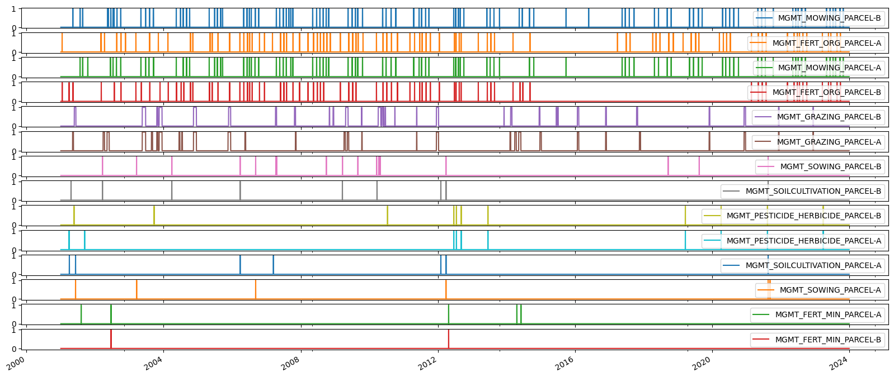
Calculate TIMESINCE management event#
timesincedf = pd.DataFrame()
for v in mgmt.columns:
series = mgmt[v].squeeze()
ts = TimeSince(series, lower_lim=1, include_lim=True)
ts.calc()
# ts_full_results = ts.get_full_results()
timesince = ts.get_timesince()
timesincedf[timesince.name] = timesince
timesincedf
| TIMESINCE_MGMT_MOWING_PARCEL-B | TIMESINCE_MGMT_FERT_ORG_PARCEL-A | TIMESINCE_MGMT_MOWING_PARCEL-A | TIMESINCE_MGMT_FERT_ORG_PARCEL-B | TIMESINCE_MGMT_GRAZING_PARCEL-B | TIMESINCE_MGMT_GRAZING_PARCEL-A | TIMESINCE_MGMT_SOWING_PARCEL-B | TIMESINCE_MGMT_SOILCULTIVATION_PARCEL-B | TIMESINCE_MGMT_PESTICIDE_HERBICIDE_PARCEL-B | TIMESINCE_MGMT_PESTICIDE_HERBICIDE_PARCEL-A | TIMESINCE_MGMT_SOILCULTIVATION_PARCEL-A | TIMESINCE_MGMT_SOWING_PARCEL-A | TIMESINCE_MGMT_FERT_MIN_PARCEL-A | TIMESINCE_MGMT_FERT_MIN_PARCEL-B | |
|---|---|---|---|---|---|---|---|---|---|---|---|---|---|---|
| 2001-01-01 | 1 | 1 | 1 | 1 | 1 | 1 | 1 | 1 | 1 | 1 | 1 | 1 | 1 | 1 |
| 2001-01-02 | 2 | 2 | 2 | 2 | 2 | 2 | 2 | 2 | 2 | 2 | 2 | 2 | 2 | 2 |
| 2001-01-03 | 3 | 3 | 3 | 3 | 3 | 3 | 3 | 3 | 3 | 3 | 3 | 3 | 3 | 3 |
| 2001-01-04 | 4 | 4 | 4 | 4 | 4 | 4 | 4 | 4 | 4 | 4 | 4 | 4 | 4 | 4 |
| 2001-01-05 | 5 | 5 | 5 | 5 | 5 | 5 | 5 | 5 | 5 | 5 | 5 | 5 | 5 | 5 |
| ... | ... | ... | ... | ... | ... | ... | ... | ... | ... | ... | ... | ... | ... | ... |
| 2023-12-27 | 58 | 89 | 58 | 89 | 377 | 377 | 859 | 859 | 272 | 272 | 859 | 839 | 3492 | 4263 |
| 2023-12-28 | 59 | 90 | 59 | 90 | 378 | 378 | 860 | 860 | 273 | 273 | 860 | 840 | 3493 | 4264 |
| 2023-12-29 | 60 | 91 | 60 | 91 | 379 | 379 | 861 | 861 | 274 | 274 | 861 | 841 | 3494 | 4265 |
| 2023-12-30 | 61 | 92 | 61 | 92 | 380 | 380 | 862 | 862 | 275 | 275 | 862 | 842 | 3495 | 4266 |
| 2023-12-31 | 62 | 93 | 62 | 93 | 381 | 381 | 863 | 863 | 276 | 276 | 863 | 843 | 3496 | 4267 |
8400 rows × 14 columns
Plots#
for v in mgmt.columns:
fig = plt.figure(facecolor='white', figsize=(20, 2), dpi=100, layout='constrained')
gs = gridspec.GridSpec(2, 1) # rows, cols
gs.update(wspace=0.3, hspace=.5, left=0.03, right=0.97, top=0.97, bottom=0.03)
ax1 = fig.add_subplot(gs[0, 0])
ax2 = fig.add_subplot(gs[1, 0])
TimeSeries(ax=ax1, series=mgmt[v]).plot(color='#1565C0')
TimeSeries(ax=ax2, series=timesincedf[f'TIMESINCE_{v}']).plot(color='#D32F2F')
ax1.set_title("Management event occurrence", color='black')
ax2.set_title("Time since last management event (in number of records)", color='black')
C:\Users\holukas\AppData\Local\miniconda3\envs\cha_fp2024\lib\site-packages\IPython\core\events.py:82: UserWarning: There are no gridspecs with layoutgrids. Possibly did not call parent GridSpec with the "figure" keyword
func(*args, **kwargs)
C:\Users\holukas\AppData\Local\miniconda3\envs\cha_fp2024\lib\site-packages\IPython\core\pylabtools.py:152: UserWarning: There are no gridspecs with layoutgrids. Possibly did not call parent GridSpec with the "figure" keyword
fig.canvas.print_figure(bytes_io, **kw)
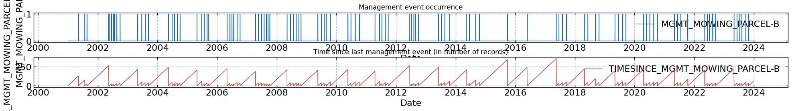
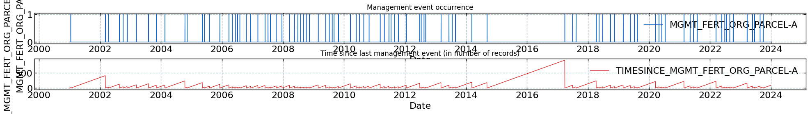
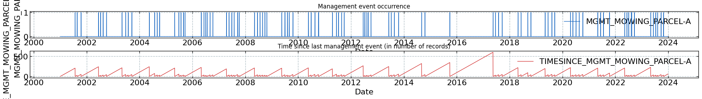
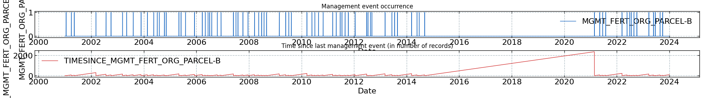
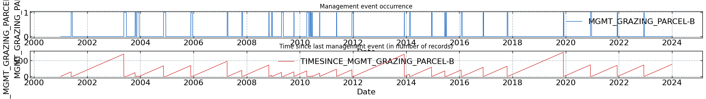
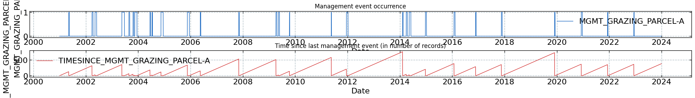
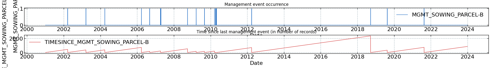
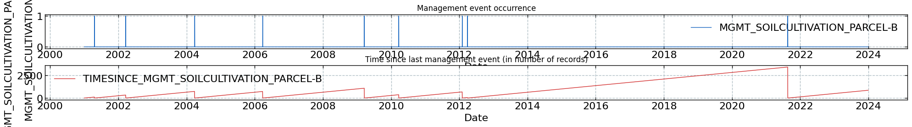
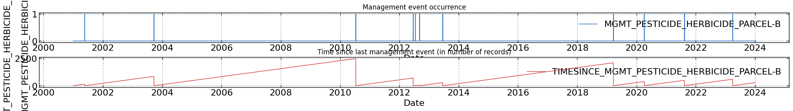
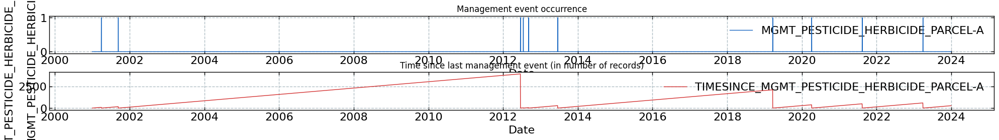
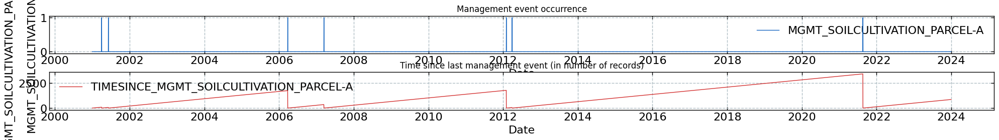
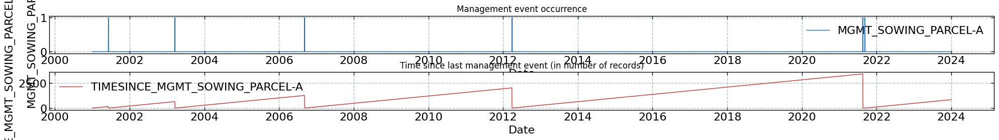
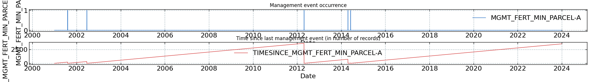
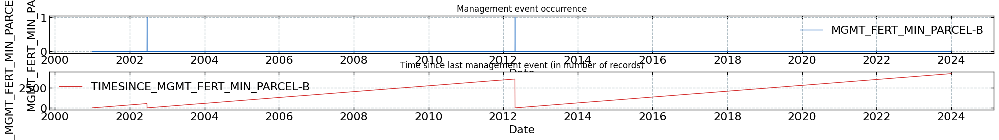
+ Add TIMESINCE variables to management data#
mgmt = pd.concat([mgmt, timesincedf], axis=1)
mgmt
| MGMT_MOWING_PARCEL-B | MGMT_FERT_ORG_PARCEL-A | MGMT_MOWING_PARCEL-A | MGMT_FERT_ORG_PARCEL-B | MGMT_GRAZING_PARCEL-B | MGMT_GRAZING_PARCEL-A | MGMT_SOWING_PARCEL-B | MGMT_SOILCULTIVATION_PARCEL-B | MGMT_PESTICIDE_HERBICIDE_PARCEL-B | MGMT_PESTICIDE_HERBICIDE_PARCEL-A | MGMT_SOILCULTIVATION_PARCEL-A | MGMT_SOWING_PARCEL-A | MGMT_FERT_MIN_PARCEL-A | MGMT_FERT_MIN_PARCEL-B | TIMESINCE_MGMT_MOWING_PARCEL-B | TIMESINCE_MGMT_FERT_ORG_PARCEL-A | TIMESINCE_MGMT_MOWING_PARCEL-A | TIMESINCE_MGMT_FERT_ORG_PARCEL-B | TIMESINCE_MGMT_GRAZING_PARCEL-B | TIMESINCE_MGMT_GRAZING_PARCEL-A | TIMESINCE_MGMT_SOWING_PARCEL-B | TIMESINCE_MGMT_SOILCULTIVATION_PARCEL-B | TIMESINCE_MGMT_PESTICIDE_HERBICIDE_PARCEL-B | TIMESINCE_MGMT_PESTICIDE_HERBICIDE_PARCEL-A | TIMESINCE_MGMT_SOILCULTIVATION_PARCEL-A | TIMESINCE_MGMT_SOWING_PARCEL-A | TIMESINCE_MGMT_FERT_MIN_PARCEL-A | TIMESINCE_MGMT_FERT_MIN_PARCEL-B | |
|---|---|---|---|---|---|---|---|---|---|---|---|---|---|---|---|---|---|---|---|---|---|---|---|---|---|---|---|---|
| 2001-01-01 | 0 | 0 | 0 | 0 | 0 | 0 | 0 | 0 | 0 | 0 | 0 | 0 | 0 | 0 | 1 | 1 | 1 | 1 | 1 | 1 | 1 | 1 | 1 | 1 | 1 | 1 | 1 | 1 |
| 2001-01-02 | 0 | 0 | 0 | 0 | 0 | 0 | 0 | 0 | 0 | 0 | 0 | 0 | 0 | 0 | 2 | 2 | 2 | 2 | 2 | 2 | 2 | 2 | 2 | 2 | 2 | 2 | 2 | 2 |
| 2001-01-03 | 0 | 0 | 0 | 0 | 0 | 0 | 0 | 0 | 0 | 0 | 0 | 0 | 0 | 0 | 3 | 3 | 3 | 3 | 3 | 3 | 3 | 3 | 3 | 3 | 3 | 3 | 3 | 3 |
| 2001-01-04 | 0 | 0 | 0 | 0 | 0 | 0 | 0 | 0 | 0 | 0 | 0 | 0 | 0 | 0 | 4 | 4 | 4 | 4 | 4 | 4 | 4 | 4 | 4 | 4 | 4 | 4 | 4 | 4 |
| 2001-01-05 | 0 | 0 | 0 | 0 | 0 | 0 | 0 | 0 | 0 | 0 | 0 | 0 | 0 | 0 | 5 | 5 | 5 | 5 | 5 | 5 | 5 | 5 | 5 | 5 | 5 | 5 | 5 | 5 |
| ... | ... | ... | ... | ... | ... | ... | ... | ... | ... | ... | ... | ... | ... | ... | ... | ... | ... | ... | ... | ... | ... | ... | ... | ... | ... | ... | ... | ... |
| 2023-12-27 | 0 | 0 | 0 | 0 | 0 | 0 | 0 | 0 | 0 | 0 | 0 | 0 | 0 | 0 | 58 | 89 | 58 | 89 | 377 | 377 | 859 | 859 | 272 | 272 | 859 | 839 | 3492 | 4263 |
| 2023-12-28 | 0 | 0 | 0 | 0 | 0 | 0 | 0 | 0 | 0 | 0 | 0 | 0 | 0 | 0 | 59 | 90 | 59 | 90 | 378 | 378 | 860 | 860 | 273 | 273 | 860 | 840 | 3493 | 4264 |
| 2023-12-29 | 0 | 0 | 0 | 0 | 0 | 0 | 0 | 0 | 0 | 0 | 0 | 0 | 0 | 0 | 60 | 91 | 60 | 91 | 379 | 379 | 861 | 861 | 274 | 274 | 861 | 841 | 3494 | 4265 |
| 2023-12-30 | 0 | 0 | 0 | 0 | 0 | 0 | 0 | 0 | 0 | 0 | 0 | 0 | 0 | 0 | 61 | 92 | 61 | 92 | 380 | 380 | 862 | 862 | 275 | 275 | 862 | 842 | 3495 | 4266 |
| 2023-12-31 | 0 | 0 | 0 | 0 | 0 | 0 | 0 | 0 | 0 | 0 | 0 | 0 | 0 | 0 | 62 | 93 | 62 | 93 | 381 | 381 | 863 | 863 | 276 | 276 | 863 | 843 | 3496 | 4267 |
8400 rows × 28 columns
collist = mgmt.columns.tolist()
collist
['MGMT_MOWING_PARCEL-B',
'MGMT_FERT_ORG_PARCEL-A',
'MGMT_MOWING_PARCEL-A',
'MGMT_FERT_ORG_PARCEL-B',
'MGMT_GRAZING_PARCEL-B',
'MGMT_GRAZING_PARCEL-A',
'MGMT_SOWING_PARCEL-B',
'MGMT_SOILCULTIVATION_PARCEL-B',
'MGMT_PESTICIDE_HERBICIDE_PARCEL-B',
'MGMT_PESTICIDE_HERBICIDE_PARCEL-A',
'MGMT_SOILCULTIVATION_PARCEL-A',
'MGMT_SOWING_PARCEL-A',
'MGMT_FERT_MIN_PARCEL-A',
'MGMT_FERT_MIN_PARCEL-B',
'TIMESINCE_MGMT_MOWING_PARCEL-B',
'TIMESINCE_MGMT_FERT_ORG_PARCEL-A',
'TIMESINCE_MGMT_MOWING_PARCEL-A',
'TIMESINCE_MGMT_FERT_ORG_PARCEL-B',
'TIMESINCE_MGMT_GRAZING_PARCEL-B',
'TIMESINCE_MGMT_GRAZING_PARCEL-A',
'TIMESINCE_MGMT_SOWING_PARCEL-B',
'TIMESINCE_MGMT_SOILCULTIVATION_PARCEL-B',
'TIMESINCE_MGMT_PESTICIDE_HERBICIDE_PARCEL-B',
'TIMESINCE_MGMT_PESTICIDE_HERBICIDE_PARCEL-A',
'TIMESINCE_MGMT_SOILCULTIVATION_PARCEL-A',
'TIMESINCE_MGMT_SOWING_PARCEL-A',
'TIMESINCE_MGMT_FERT_MIN_PARCEL-A',
'TIMESINCE_MGMT_FERT_MIN_PARCEL-B']
Initiate footprint management columns#
mgmt_cols = [sub.replace('_PARCEL-A', '') for sub in collist]
mgmt_cols = [sub.replace('_PARCEL-B', '') for sub in mgmt_cols]
mgmt_cols = [sub.replace('TIMESINCE_', '') for sub in mgmt_cols]
# mgmt_cols = fp_mgmt_cols.copy()
mgmt_cols = list(set(mgmt_cols))
# display(mgmt_cols)
display(mgmt_cols)
['MGMT_SOWING',
'MGMT_GRAZING',
'MGMT_MOWING',
'MGMT_FERT_ORG',
'MGMT_FERT_MIN',
'MGMT_PESTICIDE_HERBICIDE',
'MGMT_SOILCULTIVATION']
fp_mgmt_cols = [f"{c}_FOOTPRINT" for c in mgmt_cols]
fp_mgmt_cols
['MGMT_SOWING_FOOTPRINT',
'MGMT_GRAZING_FOOTPRINT',
'MGMT_MOWING_FOOTPRINT',
'MGMT_FERT_ORG_FOOTPRINT',
'MGMT_FERT_MIN_FOOTPRINT',
'MGMT_PESTICIDE_HERBICIDE_FOOTPRINT',
'MGMT_SOILCULTIVATION_FOOTPRINT']
mgmt = mgmt.reindex(columns = mgmt.columns.tolist() + fp_mgmt_cols)
mgmt
| MGMT_MOWING_PARCEL-B | MGMT_FERT_ORG_PARCEL-A | MGMT_MOWING_PARCEL-A | MGMT_FERT_ORG_PARCEL-B | MGMT_GRAZING_PARCEL-B | MGMT_GRAZING_PARCEL-A | MGMT_SOWING_PARCEL-B | MGMT_SOILCULTIVATION_PARCEL-B | MGMT_PESTICIDE_HERBICIDE_PARCEL-B | MGMT_PESTICIDE_HERBICIDE_PARCEL-A | MGMT_SOILCULTIVATION_PARCEL-A | MGMT_SOWING_PARCEL-A | MGMT_FERT_MIN_PARCEL-A | MGMT_FERT_MIN_PARCEL-B | TIMESINCE_MGMT_MOWING_PARCEL-B | ... | TIMESINCE_MGMT_SOWING_PARCEL-B | TIMESINCE_MGMT_SOILCULTIVATION_PARCEL-B | TIMESINCE_MGMT_PESTICIDE_HERBICIDE_PARCEL-B | TIMESINCE_MGMT_PESTICIDE_HERBICIDE_PARCEL-A | TIMESINCE_MGMT_SOILCULTIVATION_PARCEL-A | TIMESINCE_MGMT_SOWING_PARCEL-A | TIMESINCE_MGMT_FERT_MIN_PARCEL-A | TIMESINCE_MGMT_FERT_MIN_PARCEL-B | MGMT_SOWING_FOOTPRINT | MGMT_GRAZING_FOOTPRINT | MGMT_MOWING_FOOTPRINT | MGMT_FERT_ORG_FOOTPRINT | MGMT_FERT_MIN_FOOTPRINT | MGMT_PESTICIDE_HERBICIDE_FOOTPRINT | MGMT_SOILCULTIVATION_FOOTPRINT | |
|---|---|---|---|---|---|---|---|---|---|---|---|---|---|---|---|---|---|---|---|---|---|---|---|---|---|---|---|---|---|---|---|
| 2001-01-01 | 0 | 0 | 0 | 0 | 0 | 0 | 0 | 0 | 0 | 0 | 0 | 0 | 0 | 0 | 1 | ... | 1 | 1 | 1 | 1 | 1 | 1 | 1 | 1 | NaN | NaN | NaN | NaN | NaN | NaN | NaN |
| 2001-01-02 | 0 | 0 | 0 | 0 | 0 | 0 | 0 | 0 | 0 | 0 | 0 | 0 | 0 | 0 | 2 | ... | 2 | 2 | 2 | 2 | 2 | 2 | 2 | 2 | NaN | NaN | NaN | NaN | NaN | NaN | NaN |
| 2001-01-03 | 0 | 0 | 0 | 0 | 0 | 0 | 0 | 0 | 0 | 0 | 0 | 0 | 0 | 0 | 3 | ... | 3 | 3 | 3 | 3 | 3 | 3 | 3 | 3 | NaN | NaN | NaN | NaN | NaN | NaN | NaN |
| 2001-01-04 | 0 | 0 | 0 | 0 | 0 | 0 | 0 | 0 | 0 | 0 | 0 | 0 | 0 | 0 | 4 | ... | 4 | 4 | 4 | 4 | 4 | 4 | 4 | 4 | NaN | NaN | NaN | NaN | NaN | NaN | NaN |
| 2001-01-05 | 0 | 0 | 0 | 0 | 0 | 0 | 0 | 0 | 0 | 0 | 0 | 0 | 0 | 0 | 5 | ... | 5 | 5 | 5 | 5 | 5 | 5 | 5 | 5 | NaN | NaN | NaN | NaN | NaN | NaN | NaN |
| ... | ... | ... | ... | ... | ... | ... | ... | ... | ... | ... | ... | ... | ... | ... | ... | ... | ... | ... | ... | ... | ... | ... | ... | ... | ... | ... | ... | ... | ... | ... | ... |
| 2023-12-27 | 0 | 0 | 0 | 0 | 0 | 0 | 0 | 0 | 0 | 0 | 0 | 0 | 0 | 0 | 58 | ... | 859 | 859 | 272 | 272 | 859 | 839 | 3492 | 4263 | NaN | NaN | NaN | NaN | NaN | NaN | NaN |
| 2023-12-28 | 0 | 0 | 0 | 0 | 0 | 0 | 0 | 0 | 0 | 0 | 0 | 0 | 0 | 0 | 59 | ... | 860 | 860 | 273 | 273 | 860 | 840 | 3493 | 4264 | NaN | NaN | NaN | NaN | NaN | NaN | NaN |
| 2023-12-29 | 0 | 0 | 0 | 0 | 0 | 0 | 0 | 0 | 0 | 0 | 0 | 0 | 0 | 0 | 60 | ... | 861 | 861 | 274 | 274 | 861 | 841 | 3494 | 4265 | NaN | NaN | NaN | NaN | NaN | NaN | NaN |
| 2023-12-30 | 0 | 0 | 0 | 0 | 0 | 0 | 0 | 0 | 0 | 0 | 0 | 0 | 0 | 0 | 61 | ... | 862 | 862 | 275 | 275 | 862 | 842 | 3495 | 4266 | NaN | NaN | NaN | NaN | NaN | NaN | NaN |
| 2023-12-31 | 0 | 0 | 0 | 0 | 0 | 0 | 0 | 0 | 0 | 0 | 0 | 0 | 0 | 0 | 62 | ... | 863 | 863 | 276 | 276 | 863 | 843 | 3496 | 4267 | NaN | NaN | NaN | NaN | NaN | NaN | NaN |
8400 rows × 35 columns
HALF-HOURLY#
Half-hourly timestamp for management data#
first_hh = pd.to_datetime(mgmt.index[0]) + pd.Timedelta(minutes=15)
last_hh = pd.to_datetime(mgmt.index[-1]) + pd.Timedelta(hours=23, minutes=45)
print(first_hh)
print(last_hh)
2001-01-01 00:15:00
2023-12-31 23:45:00
Initiate half-hourly dataframe for management data#
timestamp_hh = pd.date_range(first_hh, last_hh, freq='30min')
mgmt_hh = pd.DataFrame(index=timestamp_hh)
mgmt_hh['TIMESTAMP_MIDDLE'] = pd.to_datetime(mgmt_hh.index) # For merging with daily time resolution management data
mgmt_hh['DATE'] = pd.to_datetime(mgmt_hh.index.date) # For merging with daily time resolution management data
mgmt_hh
| TIMESTAMP_MIDDLE | DATE | |
|---|---|---|
| 2001-01-01 00:15:00 | 2001-01-01 00:15:00 | 2001-01-01 |
| 2001-01-01 00:45:00 | 2001-01-01 00:45:00 | 2001-01-01 |
| 2001-01-01 01:15:00 | 2001-01-01 01:15:00 | 2001-01-01 |
| 2001-01-01 01:45:00 | 2001-01-01 01:45:00 | 2001-01-01 |
| 2001-01-01 02:15:00 | 2001-01-01 02:15:00 | 2001-01-01 |
| ... | ... | ... |
| 2023-12-31 21:45:00 | 2023-12-31 21:45:00 | 2023-12-31 |
| 2023-12-31 22:15:00 | 2023-12-31 22:15:00 | 2023-12-31 |
| 2023-12-31 22:45:00 | 2023-12-31 22:45:00 | 2023-12-31 |
| 2023-12-31 23:15:00 | 2023-12-31 23:15:00 | 2023-12-31 |
| 2023-12-31 23:45:00 | 2023-12-31 23:45:00 | 2023-12-31 |
403200 rows × 2 columns
mgmt['DATE'] = mgmt.index
mgmt['DATE'] = pd.to_datetime(mgmt['DATE'])
mgmt.head(3)
| MGMT_MOWING_PARCEL-B | MGMT_FERT_ORG_PARCEL-A | MGMT_MOWING_PARCEL-A | MGMT_FERT_ORG_PARCEL-B | MGMT_GRAZING_PARCEL-B | MGMT_GRAZING_PARCEL-A | MGMT_SOWING_PARCEL-B | MGMT_SOILCULTIVATION_PARCEL-B | MGMT_PESTICIDE_HERBICIDE_PARCEL-B | MGMT_PESTICIDE_HERBICIDE_PARCEL-A | MGMT_SOILCULTIVATION_PARCEL-A | MGMT_SOWING_PARCEL-A | MGMT_FERT_MIN_PARCEL-A | MGMT_FERT_MIN_PARCEL-B | TIMESINCE_MGMT_MOWING_PARCEL-B | ... | TIMESINCE_MGMT_SOILCULTIVATION_PARCEL-B | TIMESINCE_MGMT_PESTICIDE_HERBICIDE_PARCEL-B | TIMESINCE_MGMT_PESTICIDE_HERBICIDE_PARCEL-A | TIMESINCE_MGMT_SOILCULTIVATION_PARCEL-A | TIMESINCE_MGMT_SOWING_PARCEL-A | TIMESINCE_MGMT_FERT_MIN_PARCEL-A | TIMESINCE_MGMT_FERT_MIN_PARCEL-B | MGMT_SOWING_FOOTPRINT | MGMT_GRAZING_FOOTPRINT | MGMT_MOWING_FOOTPRINT | MGMT_FERT_ORG_FOOTPRINT | MGMT_FERT_MIN_FOOTPRINT | MGMT_PESTICIDE_HERBICIDE_FOOTPRINT | MGMT_SOILCULTIVATION_FOOTPRINT | DATE | |
|---|---|---|---|---|---|---|---|---|---|---|---|---|---|---|---|---|---|---|---|---|---|---|---|---|---|---|---|---|---|---|---|
| 2001-01-01 | 0 | 0 | 0 | 0 | 0 | 0 | 0 | 0 | 0 | 0 | 0 | 0 | 0 | 0 | 1 | ... | 1 | 1 | 1 | 1 | 1 | 1 | 1 | NaN | NaN | NaN | NaN | NaN | NaN | NaN | 2001-01-01 |
| 2001-01-02 | 0 | 0 | 0 | 0 | 0 | 0 | 0 | 0 | 0 | 0 | 0 | 0 | 0 | 0 | 2 | ... | 2 | 2 | 2 | 2 | 2 | 2 | 2 | NaN | NaN | NaN | NaN | NaN | NaN | NaN | 2001-01-02 |
| 2001-01-03 | 0 | 0 | 0 | 0 | 0 | 0 | 0 | 0 | 0 | 0 | 0 | 0 | 0 | 0 | 3 | ... | 3 | 3 | 3 | 3 | 3 | 3 | 3 | NaN | NaN | NaN | NaN | NaN | NaN | NaN | 2001-01-03 |
3 rows × 36 columns
# Merge on DATE column
mgmt_hh = pd.merge(mgmt_hh, mgmt, on='DATE')
mgmt_hh
| TIMESTAMP_MIDDLE | DATE | MGMT_MOWING_PARCEL-B | MGMT_FERT_ORG_PARCEL-A | MGMT_MOWING_PARCEL-A | MGMT_FERT_ORG_PARCEL-B | MGMT_GRAZING_PARCEL-B | MGMT_GRAZING_PARCEL-A | MGMT_SOWING_PARCEL-B | MGMT_SOILCULTIVATION_PARCEL-B | MGMT_PESTICIDE_HERBICIDE_PARCEL-B | MGMT_PESTICIDE_HERBICIDE_PARCEL-A | MGMT_SOILCULTIVATION_PARCEL-A | MGMT_SOWING_PARCEL-A | MGMT_FERT_MIN_PARCEL-A | ... | TIMESINCE_MGMT_SOWING_PARCEL-B | TIMESINCE_MGMT_SOILCULTIVATION_PARCEL-B | TIMESINCE_MGMT_PESTICIDE_HERBICIDE_PARCEL-B | TIMESINCE_MGMT_PESTICIDE_HERBICIDE_PARCEL-A | TIMESINCE_MGMT_SOILCULTIVATION_PARCEL-A | TIMESINCE_MGMT_SOWING_PARCEL-A | TIMESINCE_MGMT_FERT_MIN_PARCEL-A | TIMESINCE_MGMT_FERT_MIN_PARCEL-B | MGMT_SOWING_FOOTPRINT | MGMT_GRAZING_FOOTPRINT | MGMT_MOWING_FOOTPRINT | MGMT_FERT_ORG_FOOTPRINT | MGMT_FERT_MIN_FOOTPRINT | MGMT_PESTICIDE_HERBICIDE_FOOTPRINT | MGMT_SOILCULTIVATION_FOOTPRINT | |
|---|---|---|---|---|---|---|---|---|---|---|---|---|---|---|---|---|---|---|---|---|---|---|---|---|---|---|---|---|---|---|---|
| 0 | 2001-01-01 00:15:00 | 2001-01-01 | 0 | 0 | 0 | 0 | 0 | 0 | 0 | 0 | 0 | 0 | 0 | 0 | 0 | ... | 1 | 1 | 1 | 1 | 1 | 1 | 1 | 1 | NaN | NaN | NaN | NaN | NaN | NaN | NaN |
| 1 | 2001-01-01 00:45:00 | 2001-01-01 | 0 | 0 | 0 | 0 | 0 | 0 | 0 | 0 | 0 | 0 | 0 | 0 | 0 | ... | 1 | 1 | 1 | 1 | 1 | 1 | 1 | 1 | NaN | NaN | NaN | NaN | NaN | NaN | NaN |
| 2 | 2001-01-01 01:15:00 | 2001-01-01 | 0 | 0 | 0 | 0 | 0 | 0 | 0 | 0 | 0 | 0 | 0 | 0 | 0 | ... | 1 | 1 | 1 | 1 | 1 | 1 | 1 | 1 | NaN | NaN | NaN | NaN | NaN | NaN | NaN |
| 3 | 2001-01-01 01:45:00 | 2001-01-01 | 0 | 0 | 0 | 0 | 0 | 0 | 0 | 0 | 0 | 0 | 0 | 0 | 0 | ... | 1 | 1 | 1 | 1 | 1 | 1 | 1 | 1 | NaN | NaN | NaN | NaN | NaN | NaN | NaN |
| 4 | 2001-01-01 02:15:00 | 2001-01-01 | 0 | 0 | 0 | 0 | 0 | 0 | 0 | 0 | 0 | 0 | 0 | 0 | 0 | ... | 1 | 1 | 1 | 1 | 1 | 1 | 1 | 1 | NaN | NaN | NaN | NaN | NaN | NaN | NaN |
| ... | ... | ... | ... | ... | ... | ... | ... | ... | ... | ... | ... | ... | ... | ... | ... | ... | ... | ... | ... | ... | ... | ... | ... | ... | ... | ... | ... | ... | ... | ... | ... |
| 403195 | 2023-12-31 21:45:00 | 2023-12-31 | 0 | 0 | 0 | 0 | 0 | 0 | 0 | 0 | 0 | 0 | 0 | 0 | 0 | ... | 863 | 863 | 276 | 276 | 863 | 843 | 3496 | 4267 | NaN | NaN | NaN | NaN | NaN | NaN | NaN |
| 403196 | 2023-12-31 22:15:00 | 2023-12-31 | 0 | 0 | 0 | 0 | 0 | 0 | 0 | 0 | 0 | 0 | 0 | 0 | 0 | ... | 863 | 863 | 276 | 276 | 863 | 843 | 3496 | 4267 | NaN | NaN | NaN | NaN | NaN | NaN | NaN |
| 403197 | 2023-12-31 22:45:00 | 2023-12-31 | 0 | 0 | 0 | 0 | 0 | 0 | 0 | 0 | 0 | 0 | 0 | 0 | 0 | ... | 863 | 863 | 276 | 276 | 863 | 843 | 3496 | 4267 | NaN | NaN | NaN | NaN | NaN | NaN | NaN |
| 403198 | 2023-12-31 23:15:00 | 2023-12-31 | 0 | 0 | 0 | 0 | 0 | 0 | 0 | 0 | 0 | 0 | 0 | 0 | 0 | ... | 863 | 863 | 276 | 276 | 863 | 843 | 3496 | 4267 | NaN | NaN | NaN | NaN | NaN | NaN | NaN |
| 403199 | 2023-12-31 23:45:00 | 2023-12-31 | 0 | 0 | 0 | 0 | 0 | 0 | 0 | 0 | 0 | 0 | 0 | 0 | 0 | ... | 863 | 863 | 276 | 276 | 863 | 843 | 3496 | 4267 | NaN | NaN | NaN | NaN | NaN | NaN | NaN |
403200 rows × 37 columns
mgmt_hh = mgmt_hh.set_index('TIMESTAMP_MIDDLE')
mgmt_hh = mgmt_hh.drop('DATE', axis=1)
mgmt_hh
| MGMT_MOWING_PARCEL-B | MGMT_FERT_ORG_PARCEL-A | MGMT_MOWING_PARCEL-A | MGMT_FERT_ORG_PARCEL-B | MGMT_GRAZING_PARCEL-B | MGMT_GRAZING_PARCEL-A | MGMT_SOWING_PARCEL-B | MGMT_SOILCULTIVATION_PARCEL-B | MGMT_PESTICIDE_HERBICIDE_PARCEL-B | MGMT_PESTICIDE_HERBICIDE_PARCEL-A | MGMT_SOILCULTIVATION_PARCEL-A | MGMT_SOWING_PARCEL-A | MGMT_FERT_MIN_PARCEL-A | MGMT_FERT_MIN_PARCEL-B | TIMESINCE_MGMT_MOWING_PARCEL-B | ... | TIMESINCE_MGMT_SOWING_PARCEL-B | TIMESINCE_MGMT_SOILCULTIVATION_PARCEL-B | TIMESINCE_MGMT_PESTICIDE_HERBICIDE_PARCEL-B | TIMESINCE_MGMT_PESTICIDE_HERBICIDE_PARCEL-A | TIMESINCE_MGMT_SOILCULTIVATION_PARCEL-A | TIMESINCE_MGMT_SOWING_PARCEL-A | TIMESINCE_MGMT_FERT_MIN_PARCEL-A | TIMESINCE_MGMT_FERT_MIN_PARCEL-B | MGMT_SOWING_FOOTPRINT | MGMT_GRAZING_FOOTPRINT | MGMT_MOWING_FOOTPRINT | MGMT_FERT_ORG_FOOTPRINT | MGMT_FERT_MIN_FOOTPRINT | MGMT_PESTICIDE_HERBICIDE_FOOTPRINT | MGMT_SOILCULTIVATION_FOOTPRINT | |
|---|---|---|---|---|---|---|---|---|---|---|---|---|---|---|---|---|---|---|---|---|---|---|---|---|---|---|---|---|---|---|---|
| TIMESTAMP_MIDDLE | |||||||||||||||||||||||||||||||
| 2001-01-01 00:15:00 | 0 | 0 | 0 | 0 | 0 | 0 | 0 | 0 | 0 | 0 | 0 | 0 | 0 | 0 | 1 | ... | 1 | 1 | 1 | 1 | 1 | 1 | 1 | 1 | NaN | NaN | NaN | NaN | NaN | NaN | NaN |
| 2001-01-01 00:45:00 | 0 | 0 | 0 | 0 | 0 | 0 | 0 | 0 | 0 | 0 | 0 | 0 | 0 | 0 | 1 | ... | 1 | 1 | 1 | 1 | 1 | 1 | 1 | 1 | NaN | NaN | NaN | NaN | NaN | NaN | NaN |
| 2001-01-01 01:15:00 | 0 | 0 | 0 | 0 | 0 | 0 | 0 | 0 | 0 | 0 | 0 | 0 | 0 | 0 | 1 | ... | 1 | 1 | 1 | 1 | 1 | 1 | 1 | 1 | NaN | NaN | NaN | NaN | NaN | NaN | NaN |
| 2001-01-01 01:45:00 | 0 | 0 | 0 | 0 | 0 | 0 | 0 | 0 | 0 | 0 | 0 | 0 | 0 | 0 | 1 | ... | 1 | 1 | 1 | 1 | 1 | 1 | 1 | 1 | NaN | NaN | NaN | NaN | NaN | NaN | NaN |
| 2001-01-01 02:15:00 | 0 | 0 | 0 | 0 | 0 | 0 | 0 | 0 | 0 | 0 | 0 | 0 | 0 | 0 | 1 | ... | 1 | 1 | 1 | 1 | 1 | 1 | 1 | 1 | NaN | NaN | NaN | NaN | NaN | NaN | NaN |
| ... | ... | ... | ... | ... | ... | ... | ... | ... | ... | ... | ... | ... | ... | ... | ... | ... | ... | ... | ... | ... | ... | ... | ... | ... | ... | ... | ... | ... | ... | ... | ... |
| 2023-12-31 21:45:00 | 0 | 0 | 0 | 0 | 0 | 0 | 0 | 0 | 0 | 0 | 0 | 0 | 0 | 0 | 62 | ... | 863 | 863 | 276 | 276 | 863 | 843 | 3496 | 4267 | NaN | NaN | NaN | NaN | NaN | NaN | NaN |
| 2023-12-31 22:15:00 | 0 | 0 | 0 | 0 | 0 | 0 | 0 | 0 | 0 | 0 | 0 | 0 | 0 | 0 | 62 | ... | 863 | 863 | 276 | 276 | 863 | 843 | 3496 | 4267 | NaN | NaN | NaN | NaN | NaN | NaN | NaN |
| 2023-12-31 22:45:00 | 0 | 0 | 0 | 0 | 0 | 0 | 0 | 0 | 0 | 0 | 0 | 0 | 0 | 0 | 62 | ... | 863 | 863 | 276 | 276 | 863 | 843 | 3496 | 4267 | NaN | NaN | NaN | NaN | NaN | NaN | NaN |
| 2023-12-31 23:15:00 | 0 | 0 | 0 | 0 | 0 | 0 | 0 | 0 | 0 | 0 | 0 | 0 | 0 | 0 | 62 | ... | 863 | 863 | 276 | 276 | 863 | 843 | 3496 | 4267 | NaN | NaN | NaN | NaN | NaN | NaN | NaN |
| 2023-12-31 23:45:00 | 0 | 0 | 0 | 0 | 0 | 0 | 0 | 0 | 0 | 0 | 0 | 0 | 0 | 0 | 62 | ... | 863 | 863 | 276 | 276 | 863 | 843 | 3496 | 4267 | NaN | NaN | NaN | NaN | NaN | NaN | NaN |
403200 rows × 35 columns
+ Add wind direction to management data#
mgmt_hh['WD'] = winddir.copy()
mgmt_hh
| MGMT_MOWING_PARCEL-B | MGMT_FERT_ORG_PARCEL-A | MGMT_MOWING_PARCEL-A | MGMT_FERT_ORG_PARCEL-B | MGMT_GRAZING_PARCEL-B | MGMT_GRAZING_PARCEL-A | MGMT_SOWING_PARCEL-B | MGMT_SOILCULTIVATION_PARCEL-B | MGMT_PESTICIDE_HERBICIDE_PARCEL-B | MGMT_PESTICIDE_HERBICIDE_PARCEL-A | MGMT_SOILCULTIVATION_PARCEL-A | MGMT_SOWING_PARCEL-A | MGMT_FERT_MIN_PARCEL-A | MGMT_FERT_MIN_PARCEL-B | TIMESINCE_MGMT_MOWING_PARCEL-B | ... | TIMESINCE_MGMT_SOILCULTIVATION_PARCEL-B | TIMESINCE_MGMT_PESTICIDE_HERBICIDE_PARCEL-B | TIMESINCE_MGMT_PESTICIDE_HERBICIDE_PARCEL-A | TIMESINCE_MGMT_SOILCULTIVATION_PARCEL-A | TIMESINCE_MGMT_SOWING_PARCEL-A | TIMESINCE_MGMT_FERT_MIN_PARCEL-A | TIMESINCE_MGMT_FERT_MIN_PARCEL-B | MGMT_SOWING_FOOTPRINT | MGMT_GRAZING_FOOTPRINT | MGMT_MOWING_FOOTPRINT | MGMT_FERT_ORG_FOOTPRINT | MGMT_FERT_MIN_FOOTPRINT | MGMT_PESTICIDE_HERBICIDE_FOOTPRINT | MGMT_SOILCULTIVATION_FOOTPRINT | WD | |
|---|---|---|---|---|---|---|---|---|---|---|---|---|---|---|---|---|---|---|---|---|---|---|---|---|---|---|---|---|---|---|---|
| TIMESTAMP_MIDDLE | |||||||||||||||||||||||||||||||
| 2001-01-01 00:15:00 | 0 | 0 | 0 | 0 | 0 | 0 | 0 | 0 | 0 | 0 | 0 | 0 | 0 | 0 | 1 | ... | 1 | 1 | 1 | 1 | 1 | 1 | 1 | NaN | NaN | NaN | NaN | NaN | NaN | NaN | NaN |
| 2001-01-01 00:45:00 | 0 | 0 | 0 | 0 | 0 | 0 | 0 | 0 | 0 | 0 | 0 | 0 | 0 | 0 | 1 | ... | 1 | 1 | 1 | 1 | 1 | 1 | 1 | NaN | NaN | NaN | NaN | NaN | NaN | NaN | NaN |
| 2001-01-01 01:15:00 | 0 | 0 | 0 | 0 | 0 | 0 | 0 | 0 | 0 | 0 | 0 | 0 | 0 | 0 | 1 | ... | 1 | 1 | 1 | 1 | 1 | 1 | 1 | NaN | NaN | NaN | NaN | NaN | NaN | NaN | NaN |
| 2001-01-01 01:45:00 | 0 | 0 | 0 | 0 | 0 | 0 | 0 | 0 | 0 | 0 | 0 | 0 | 0 | 0 | 1 | ... | 1 | 1 | 1 | 1 | 1 | 1 | 1 | NaN | NaN | NaN | NaN | NaN | NaN | NaN | NaN |
| 2001-01-01 02:15:00 | 0 | 0 | 0 | 0 | 0 | 0 | 0 | 0 | 0 | 0 | 0 | 0 | 0 | 0 | 1 | ... | 1 | 1 | 1 | 1 | 1 | 1 | 1 | NaN | NaN | NaN | NaN | NaN | NaN | NaN | NaN |
| ... | ... | ... | ... | ... | ... | ... | ... | ... | ... | ... | ... | ... | ... | ... | ... | ... | ... | ... | ... | ... | ... | ... | ... | ... | ... | ... | ... | ... | ... | ... | ... |
| 2023-12-31 21:45:00 | 0 | 0 | 0 | 0 | 0 | 0 | 0 | 0 | 0 | 0 | 0 | 0 | 0 | 0 | 62 | ... | 863 | 276 | 276 | 863 | 843 | 3496 | 4267 | NaN | NaN | NaN | NaN | NaN | NaN | NaN | 116.724 |
| 2023-12-31 22:15:00 | 0 | 0 | 0 | 0 | 0 | 0 | 0 | 0 | 0 | 0 | 0 | 0 | 0 | 0 | 62 | ... | 863 | 276 | 276 | 863 | 843 | 3496 | 4267 | NaN | NaN | NaN | NaN | NaN | NaN | NaN | 116.197 |
| 2023-12-31 22:45:00 | 0 | 0 | 0 | 0 | 0 | 0 | 0 | 0 | 0 | 0 | 0 | 0 | 0 | 0 | 62 | ... | 863 | 276 | 276 | 863 | 843 | 3496 | 4267 | NaN | NaN | NaN | NaN | NaN | NaN | NaN | 142.519 |
| 2023-12-31 23:15:00 | 0 | 0 | 0 | 0 | 0 | 0 | 0 | 0 | 0 | 0 | 0 | 0 | 0 | 0 | 62 | ... | 863 | 276 | 276 | 863 | 843 | 3496 | 4267 | NaN | NaN | NaN | NaN | NaN | NaN | NaN | 140.207 |
| 2023-12-31 23:45:00 | 0 | 0 | 0 | 0 | 0 | 0 | 0 | 0 | 0 | 0 | 0 | 0 | 0 | 0 | 62 | ... | 863 | 276 | 276 | 863 | 843 | 3496 | 4267 | NaN | NaN | NaN | NaN | NaN | NaN | NaN | 135.988 |
403200 rows × 36 columns
Fill footprint management columns depending on wind direction#
Parcel division runs from 250° to 70°
Parcel A: >= 250, < 70
Parcel B: >= 70, < 250
winddir = mgmt_hh['WD'].copy()
locs_parcel_a = (mgmt_hh['WD'] >= 250) | (mgmt_hh['WD'] < 70)
locs_parcel_b = (mgmt_hh['WD'] >= 70) & (mgmt_hh['WD'] < 250)
for m in mgmt_cols:
fp_var = f"{m}_FOOTPRINT"
fp_timesince_var = f"TIMESINCE_{m}_FOOTPRINT"
parcela_var = f"{m}_PARCEL-A"
parcela_timesince_var = f"TIMESINCE_{m}_PARCEL-A"
mgmt_hh.loc[locs_parcel_a, fp_var] = mgmt_hh.loc[locs_parcel_a, parcela_var]
mgmt_hh.loc[locs_parcel_a, fp_timesince_var] = mgmt_hh.loc[locs_parcel_a, parcela_timesince_var]
parcelb_var = f"{m}_PARCEL-B"
parcelb_timesince_var = f"TIMESINCE_{m}_PARCEL-B"
mgmt_hh.loc[locs_parcel_b, fp_var] = mgmt_hh.loc[locs_parcel_b, parcelb_var]
mgmt_hh.loc[locs_parcel_b, fp_timesince_var] = mgmt_hh.loc[locs_parcel_b, parcelb_timesince_var]
mgmt_hh
| MGMT_MOWING_PARCEL-B | MGMT_FERT_ORG_PARCEL-A | MGMT_MOWING_PARCEL-A | MGMT_FERT_ORG_PARCEL-B | MGMT_GRAZING_PARCEL-B | MGMT_GRAZING_PARCEL-A | MGMT_SOWING_PARCEL-B | MGMT_SOILCULTIVATION_PARCEL-B | MGMT_PESTICIDE_HERBICIDE_PARCEL-B | MGMT_PESTICIDE_HERBICIDE_PARCEL-A | MGMT_SOILCULTIVATION_PARCEL-A | MGMT_SOWING_PARCEL-A | MGMT_FERT_MIN_PARCEL-A | MGMT_FERT_MIN_PARCEL-B | TIMESINCE_MGMT_MOWING_PARCEL-B | ... | MGMT_SOWING_FOOTPRINT | MGMT_GRAZING_FOOTPRINT | MGMT_MOWING_FOOTPRINT | MGMT_FERT_ORG_FOOTPRINT | MGMT_FERT_MIN_FOOTPRINT | MGMT_PESTICIDE_HERBICIDE_FOOTPRINT | MGMT_SOILCULTIVATION_FOOTPRINT | WD | TIMESINCE_MGMT_SOWING_FOOTPRINT | TIMESINCE_MGMT_GRAZING_FOOTPRINT | TIMESINCE_MGMT_MOWING_FOOTPRINT | TIMESINCE_MGMT_FERT_ORG_FOOTPRINT | TIMESINCE_MGMT_FERT_MIN_FOOTPRINT | TIMESINCE_MGMT_PESTICIDE_HERBICIDE_FOOTPRINT | TIMESINCE_MGMT_SOILCULTIVATION_FOOTPRINT | |
|---|---|---|---|---|---|---|---|---|---|---|---|---|---|---|---|---|---|---|---|---|---|---|---|---|---|---|---|---|---|---|---|
| TIMESTAMP_MIDDLE | |||||||||||||||||||||||||||||||
| 2001-01-01 00:15:00 | 0 | 0 | 0 | 0 | 0 | 0 | 0 | 0 | 0 | 0 | 0 | 0 | 0 | 0 | 1 | ... | NaN | NaN | NaN | NaN | NaN | NaN | NaN | NaN | NaN | NaN | NaN | NaN | NaN | NaN | NaN |
| 2001-01-01 00:45:00 | 0 | 0 | 0 | 0 | 0 | 0 | 0 | 0 | 0 | 0 | 0 | 0 | 0 | 0 | 1 | ... | NaN | NaN | NaN | NaN | NaN | NaN | NaN | NaN | NaN | NaN | NaN | NaN | NaN | NaN | NaN |
| 2001-01-01 01:15:00 | 0 | 0 | 0 | 0 | 0 | 0 | 0 | 0 | 0 | 0 | 0 | 0 | 0 | 0 | 1 | ... | NaN | NaN | NaN | NaN | NaN | NaN | NaN | NaN | NaN | NaN | NaN | NaN | NaN | NaN | NaN |
| 2001-01-01 01:45:00 | 0 | 0 | 0 | 0 | 0 | 0 | 0 | 0 | 0 | 0 | 0 | 0 | 0 | 0 | 1 | ... | NaN | NaN | NaN | NaN | NaN | NaN | NaN | NaN | NaN | NaN | NaN | NaN | NaN | NaN | NaN |
| 2001-01-01 02:15:00 | 0 | 0 | 0 | 0 | 0 | 0 | 0 | 0 | 0 | 0 | 0 | 0 | 0 | 0 | 1 | ... | NaN | NaN | NaN | NaN | NaN | NaN | NaN | NaN | NaN | NaN | NaN | NaN | NaN | NaN | NaN |
| ... | ... | ... | ... | ... | ... | ... | ... | ... | ... | ... | ... | ... | ... | ... | ... | ... | ... | ... | ... | ... | ... | ... | ... | ... | ... | ... | ... | ... | ... | ... | ... |
| 2023-12-31 21:45:00 | 0 | 0 | 0 | 0 | 0 | 0 | 0 | 0 | 0 | 0 | 0 | 0 | 0 | 0 | 62 | ... | 0.0 | 0.0 | 0.0 | 0.0 | 0.0 | 0.0 | 0.0 | 116.724 | 863.0 | 381.0 | 62.0 | 93.0 | 4267.0 | 276.0 | 863.0 |
| 2023-12-31 22:15:00 | 0 | 0 | 0 | 0 | 0 | 0 | 0 | 0 | 0 | 0 | 0 | 0 | 0 | 0 | 62 | ... | 0.0 | 0.0 | 0.0 | 0.0 | 0.0 | 0.0 | 0.0 | 116.197 | 863.0 | 381.0 | 62.0 | 93.0 | 4267.0 | 276.0 | 863.0 |
| 2023-12-31 22:45:00 | 0 | 0 | 0 | 0 | 0 | 0 | 0 | 0 | 0 | 0 | 0 | 0 | 0 | 0 | 62 | ... | 0.0 | 0.0 | 0.0 | 0.0 | 0.0 | 0.0 | 0.0 | 142.519 | 863.0 | 381.0 | 62.0 | 93.0 | 4267.0 | 276.0 | 863.0 |
| 2023-12-31 23:15:00 | 0 | 0 | 0 | 0 | 0 | 0 | 0 | 0 | 0 | 0 | 0 | 0 | 0 | 0 | 62 | ... | 0.0 | 0.0 | 0.0 | 0.0 | 0.0 | 0.0 | 0.0 | 140.207 | 863.0 | 381.0 | 62.0 | 93.0 | 4267.0 | 276.0 | 863.0 |
| 2023-12-31 23:45:00 | 0 | 0 | 0 | 0 | 0 | 0 | 0 | 0 | 0 | 0 | 0 | 0 | 0 | 0 | 62 | ... | 0.0 | 0.0 | 0.0 | 0.0 | 0.0 | 0.0 | 0.0 | 135.988 | 863.0 | 381.0 | 62.0 | 93.0 | 4267.0 | 276.0 | 863.0 |
403200 rows × 43 columns
Plot (example one day)#
locs = (mgmt_hh.index.year == 2014) & (mgmt.index.month == 7) & (mgmt.index.day == 17)
mgmt.loc[locs, ['TIMESINCE_MGMT_MOWING_FOOTPRINT', 'TIMESINCE_MGMT_MOWING_PARCEL-A', 'TIMESINCE_MGMT_MOWING_PARCEL-B', 'WD']].plot(x_compat=True, subplots=True, figsize=(20, 5))
plt.axhline(250)
plt.axhline(70)
plt.grid();
FERTILIZER AMOUNT NITROGEN (not used)#
Get fertilizer amounts with start and end date#
# fert_n_col = 'Total Fertilizer N (kg/ha)'
# fert_df = mgmt_detailed[['Start', 'End', fert_n_col, 'Parcel']].copy()
# fert_df
# fert_df['FERT_NAME'] = 'MGMT_FERT_N_TOT_' + fert_df['Parcel']
# fert_df
# locs = fert_df[fert_n_col] > 0
# fert_df = fert_df[locs].copy()
# fert_df
Create empty fertilizer dataframe with full timestamp#
# fert_n = pd.DataFrame(index=timestamp_full, columns=['MGMT_FERT_N_TOT', 'MGMT_FERT_N_TOT_PARCEL-A', 'MGMT_FERT_N_TOT_PARCEL-B'])
# fert_n
Insert fertilizer amount into dataframe with full timestamp#
# for ix, event in fert_df.iterrows():
# n_amount = event[fert_n_col]
# fert_name = event['FERT_NAME']
# start = event['Start']
# end = event['End']
# # print(fert_name, n_amount, start, end)
# locs = (fert_n.index >= start) & (fert_n.index <= end)
# fert_n.loc[locs, fert_name] = n_amount # Insert in column for this parcel
# fert_n = fert_n.fillna(0)
# fert_n['MGMT_FERT_N_TOT'] = fert_n['MGMT_FERT_N_TOT_PARCEL-A'].add(fert_n['MGMT_FERT_N_TOT_PARCEL-B'])
# fert_n
+ Add winddirection for fertilizer data#
# fert_n['WD'] = winddir.copy()
# fert_n
Fill footprint fertilizer column#
# fert_n['MGMT_FERT_N_TOT_FOOTPRINT'] = 0
# locs_parcel_a = (mgmt['WD'] >= 250) | (mgmt['WD'] < 70)
# locs_parcel_b = (mgmt['WD'] >= 70) & (mgmt['WD'] < 250)
# fert_n.loc[locs_parcel_a, 'MGMT_FERT_N_TOT_FOOTPRINT'] = fert_n.loc[locs_parcel_a, 'MGMT_FERT_N_TOT_PARCEL-A']
# fert_n.loc[locs_parcel_b, 'MGMT_FERT_N_TOT_FOOTPRINT'] = fert_n.loc[locs_parcel_b, 'MGMT_FERT_N_TOT_PARCEL-B']
# fert_n
Plot#
# fert_n.plot(x_compat=True, subplots=True);
+ Add fertilizer amounts to management data#
# mgmt = pd.concat([mgmt, fert_n], axis=1)
# mgmt
Export data to file#
Keep management info from 2005 onwards#
keeplocs = (mgmt.index.year >= 2005) & (mgmt.index.year <= 2023)
mgmt = mgmt.loc[keeplocs].copy()
mgmt
Plot#
# mgmt.plot(x_compat=True, subplots=True, figsize=(20, 30));
Save to file#
# mgmt.to_csv("16.3_mgmt_full_timestamp.csv")
s = mgmt['MGMT_FERT_N_TOT_PARCEL-A'].copy()
s
mgmt[['MGMT_FERT_N_TOT_PARCEL-A']].to_csv(r"x.csv")
# nitrogen fert is simply a column with the amount of nitrogen per hectar which was applied
# it consists of zeros and then the amount applied on the day of the fertilization
df = mgmt[['MGMT_FERT_N_TOT_PARCEL-A']].copy()
df['n_fert_decay'] = df['MGMT_FERT_N_TOT_PARCEL-A'].copy()
df['n_fert_decay'].replace(0, pd.NA, inplace=True) # Replace 0 with NaN
# Function to fill NaNs with an exponential decline from the last known value + previous decay residuals
def fill_exponential_decline(series, decay_factor=0.9985):
last_value = None
residual = 0
for i in range(len(series)):
if pd.isna(series.iloc[i]):
if last_value is not None:
residual *= decay_factor
series.iloc[i] = residual
else:
series.iloc[i] = pd.NA
else:
if last_value is not None:
residual = last_value * decay_factor + residual * decay_factor
else:
residual = series.iloc[i]
last_value = series.iloc[i]
series.iloc[i] += residual - series.iloc[i]
return series
# Apply the function to fill NaNs
df['n_fert_decay'] = fill_exponential_decline(df['n_fert_decay'])
df.plot(x_compat=True, subplots=True)
df['n_fert_decay'] = df['n_fert_decay'].fillna(0)
df['n_fert_decay'].plot(x_compat=True)
df